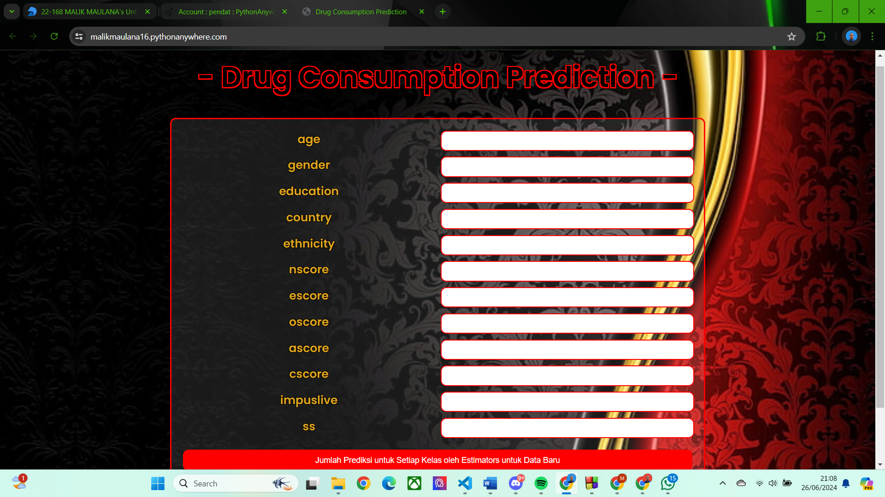

<<< Klasifikasi Dataset Iris “Drug Consumption Prediction” >>>#
Link Untuk Aplikasi Klasifikasi Gaussian Naive Bayes : https://malikmaulana16.pythonanywhere.com/
1. Analisis Data dan Implementasi Sistem Klasifikasi Pengkonsumsi Narkoba#
Tujuan Analisis dan Implementasi Sistem Klasifikasi Orang Dengan Tingkat Kecanduan Narkoba#
Tujuan pengambilan dataset “Drug Consumption” yaitu untuk mengembangkan suatu sistem yang dapat memprediksi apakah seseorang memiliki tingkat kecanduan terhadap narkoba “Heroin”. Dengan menggunakan teknik machine learning, diharapkan sistem ini mampu mengidentifikasi pola dan faktor-faktor yang berkontribusi terhadap kecanduan heroin, sehingga dapat digunakan sebagai alat bantu dalam upaya pencegahan dan intervensi dini. Sistem ini juga diharapkan dapat memberikan wawasan lebih mendalam kepada para peneliti dan praktisi kesehatan mengenai karakteristik dan profil individu yang berisiko tinggi, serta membantu dalam penyusunan strategi pengobatan yang lebih efektif.
Perbedaan tingkat kecanduan seseorang terhadap narkoba bisa dilihat dari tingkatan dibawah ini:
CL0: Tidak ada konsumsi alkohol.
CL1: Konsumsi alkohol dalam jumlah sangat rendah (misalnya, hanya sesekali).
CL2: Konsumsi alkohol dalam jumlah rendah (misalnya, beberapa kali dalam setahun).
CL3: Konsumsi alkohol dalam jumlah sedang (misalnya, beberapa kali dalam sebulan).
CL4: Konsumsi alkohol dalam jumlah tinggi (misalnya, beberapa kali dalam seminggu).
CL5: Konsumsi alkohol dalam jumlah sangat tinggi (misalnya, hampir setiap hari).
CL6: Konsumsi alkohol dalam jumlah sangat tinggi dan berisiko tinggi (misalnya, setiap hari).
Sistem ini dibentuk supaya menentukan seseorang tingkat kecanduan terhadap narkoba pada tingkatan berapa, sehingga terapi seseorang akan berbeda jika orang itu ingin menjalani terapi untuk kesembuhan orang tersebut.
2. Data Understanding#
Data adalah kumpulan fakta, angka, atau informasi yang dapat dikumpulkan, disimpan, dan dianalisis. Data bisa berasal dari berbagai sumber dan dalam berbagai format. Misalnya, data dapat berasal dari sensor, survei, transaksi keuangan, atau interaksi pengguna di internet.
Beberapa kategori utama data adalah:
Data Numerik: Angka yang dapat dihitung dan diukur, seperti pendapatan, suhu, atau jumlah produk terjual.
Data Kualitatif: Informasi deskriptif yang tidak dapat diukur dengan angka, seperti jenis kelamin, warna, atau merek.
Data Terstruktur: Data yang disusun dalam format yang terorganisir, seperti tabel dalam basis data, yang memudahkan analisis dan pencarian.
Data Tidak Terstruktur: Data yang tidak memiliki format tertentu atau struktur yang jelas, seperti teks dari artikel berita, gambar, atau video.
Data Semi-Terstruktur: Data yang tidak sepenuhnya terstruktur tapi memiliki elemen pengorganisasian, seperti file XML atau JSON.
Data digunakan dalam berbagai bidang untuk berbagai tujuan, termasuk penelitian ilmiah, analisis bisnis, pengembangan produk, dan pengambilan keputusan. Di era digital ini, kemampuan untuk mengumpulkan dan menganalisis data dengan efisien menjadi sangat penting karena dapat memberikan wawasan yang berharga dan mendukung inovasi serta efisiensi operasional.
Lalu untukdData understanding (pemahaman data) adalah tahap awal dalam proses analisis data atau proyek data mining di mana tujuan utamanya adalah memahami karakteristik dasar dari data yang tersedia. Proses ini melibatkan beberapa langkah kunci:
Pengumpulan Data Awal: Mengumpulkan data yang relevan untuk proyek atau analisis yang sedang dikerjakan. Ini mungkin termasuk data internal perusahaan, data publik, atau data yang diperoleh dari sumber eksternal.
Deskripsi Data: Menggambarkan dan meringkas data untuk memahami struktur dan distribusi data. Langkah ini melibatkan deskripsi statistik dasar seperti mean, median, mode, varians, dan standar deviasi.
Eksplorasi Data: Menggunakan teknik visualisasi dan analisis statistik untuk menemukan pola, anomali, atau wawasan penting dari data. Eksplorasi ini dapat mencakup pembuatan grafik, diagram, dan tabel.
Verifikasi Kualitas Data: Memeriksa data untuk kesalahan, data yang hilang, duplikasi, atau inkonsistensi. Langkah ini penting untuk memastikan bahwa data yang akan dianalisis bersih dan akurat.
Pemahaman Domain: Menggabungkan pengetahuan domain atau konteks di mana data dikumpulkan dan akan digunakan. Ini membantu dalam memahami relevansi dan implikasi dari data tersebut.
Tahap pemahaman data sangat penting karena membantu analis atau ilmuwan data mendapatkan gambaran yang jelas tentang data sebelum melanjutkan ke tahap selanjutnya, seperti pemodelan data atau analisis lanjutan. Pemahaman yang baik tentang data memastikan bahwa hasil analisis lebih akurat dan relevan dengan tujuan yang ingin dicapai.
Pengumpulan Data#
Mencari Dataset#
Langkah pertama dalam pengumpulan data adalah mencari dataset yang akan kita gunakan.
Pencarian data bisa dilakukan di website UCI Dataset, disini data yang kita gunakan yaitu drug cosumption : https://archive.ics.uci.edu/dataset/373/drug+consumption+quantified
Menampilkan Dataset#
Setelah menentukan dataset yang ingin kita olah, selanjutnya kita tampilkan datasetnya
!pip install ucimlrepo
from ucimlrepo import fetch_ucirepo
# Mengambil dataset Drug Cosumption dari UCI Repository
drug_cosumption = fetch_ucirepo(id=373)
# Menampilkan metadata dataset
print("Metadata:")
print(drug_cosumption.metadata)
# Menampilkan informasi variabel (fitur dan target)
print("\nInformasi Variabel:")
print(drug_cosumption.variables)
# Memisahkan fitur (X) dan target (y)
X = drug_cosumption.data.features
y = drug_cosumption.data.targets
# Contoh untuk menunjukkan bagaimana mengakses X dan y:
print("\nContoh data fitur (X):")
print(X.head())
print("\nContoh data target (y):")
print(y.head())
Requirement already satisfied: ucimlrepo in c:\users\asus\appdata\local\programs\python\python312\lib\site-packages (0.0.7)
Requirement already satisfied: pandas>=1.0.0 in c:\users\asus\appdata\local\programs\python\python312\lib\site-packages (from ucimlrepo) (2.2.2)
Requirement already satisfied: certifi>=2020.12.5 in c:\users\asus\appdata\local\programs\python\python312\lib\site-packages (from ucimlrepo) (2024.2.2)
Requirement already satisfied: numpy>=1.26.0 in c:\users\asus\appdata\local\programs\python\python312\lib\site-packages (from pandas>=1.0.0->ucimlrepo) (2.0.0)
Requirement already satisfied: python-dateutil>=2.8.2 in c:\users\asus\appdata\local\programs\python\python312\lib\site-packages (from pandas>=1.0.0->ucimlrepo) (2.9.0.post0)
Requirement already satisfied: pytz>=2020.1 in c:\users\asus\appdata\local\programs\python\python312\lib\site-packages (from pandas>=1.0.0->ucimlrepo) (2024.1)
Requirement already satisfied: tzdata>=2022.7 in c:\users\asus\appdata\local\programs\python\python312\lib\site-packages (from pandas>=1.0.0->ucimlrepo) (2024.1)
Requirement already satisfied: six>=1.5 in c:\users\asus\appdata\local\programs\python\python312\lib\site-packages (from python-dateutil>=2.8.2->pandas>=1.0.0->ucimlrepo) (1.16.0)
[notice] A new release of pip is available: 24.0 -> 24.1
[notice] To update, run: python.exe -m pip install --upgrade pip
Metadata:
{'uci_id': 373, 'name': 'Drug Consumption (Quantified)', 'repository_url': 'https://archive.ics.uci.edu/dataset/373/drug+consumption+quantified', 'data_url': 'https://archive.ics.uci.edu/static/public/373/data.csv', 'abstract': 'Classify type of drug consumer by personality data', 'area': 'Social Science', 'tasks': ['Classification'], 'characteristics': ['Multivariate'], 'num_instances': 1885, 'num_features': 12, 'feature_types': ['Real'], 'demographics': ['Age', 'Gender', 'Education Level', 'Nationality', 'Ethnicity'], 'target_col': ['alcohol', 'amphet', 'amyl', 'benzos', 'caff', 'cannabis', 'choc', 'coke', 'crack', 'ecstasy', 'heroin', 'ketamine', 'legalh', 'lsd', 'meth', 'mushrooms', 'nicotine', 'semer', 'vsa'], 'index_col': ['id'], 'has_missing_values': 'no', 'missing_values_symbol': None, 'year_of_dataset_creation': 2015, 'last_updated': 'Fri Mar 08 2024', 'dataset_doi': '10.24432/C5TC7S', 'creators': ['Elaine Fehrman', 'Vincent Egan', 'Evgeny Mirkes'], 'intro_paper': {'title': 'The Five Factor Model of personality and evaluation of drug consumption risk', 'authors': 'E. Fehrman, A. Muhammad, E. Mirkes, Vincent Egan, A. Gorban', 'published_in': 'Data Science', 'year': 2015, 'url': 'https://arxiv.org/abs/1506.06297', 'doi': None}, 'additional_info': {'summary': 'Database contains records for 1885 respondents. For each respondent 12 attributes are known: Personality measurements which include NEO-FFI-R (neuroticism, extraversion, openness to experience, agreeableness, and conscientiousness), BIS-11 (impulsivity), and ImpSS (sensation seeking), level of education, age, gender, country of residence and ethnicity. All input attributes are originally categorical and are quantified. After quantification values of all input features can be considered as real-valued. In addition, participants were questioned concerning their use of 18 legal and illegal drugs (alcohol, amphetamines, amyl nitrite, benzodiazepine, cannabis, chocolate, cocaine, caffeine, crack, ecstasy, heroin, ketamine, legal highs, LSD, methadone, mushrooms, nicotine and volatile substance abuse and one fictitious drug (Semeron) which was introduced to identify over-claimers. For each drug they have to select one of the answers: never used the drug, used it over a decade ago, or in the last decade, year, month, week, or day.\nDatabase contains 18 classification problems. Each of independent label variables contains seven classes: "Never Used", "Used over a Decade Ago", "Used in Last Decade", "Used in Last Year", "Used in Last Month", "Used in Last Week", and "Used in Last Day".\n\nProblem which can be solved:\n* Seven class classifications for each drug separately.\n* Problem can be transformed to binary classification by union of part of classes into one new class. For example, "Never Used", "Used over a Decade Ago" form class "Non-user" and all other classes form class "User".\n* The best binarization of classes for each attribute.\n* Evaluation of risk to be drug consumer for each drug.\n\nDetailed description of database and process of data quantification are presented in E. Fehrman, A. K. Muhammad, E. M. Mirkes, V. Egan and A. N. Gorban, "The Five Factor Model of personality and evaluation of drug consumption risk.," arXiv https://arxiv.org/abs/1506.06297, 2015\nPaper above solve binary classification problem for all drugs. For most of drugs sensitivity and specificity are greater than 75%.\n', 'purpose': None, 'funded_by': None, 'instances_represent': None, 'recommended_data_splits': None, 'sensitive_data': None, 'preprocessing_description': None, 'variable_info': '1. ID is number of record in original database. Cannot be related to participant. It can be used for reference only.\r\n\r\n2. Age (Real) is age of participant and has one of the values:\r\n Value Meaning Cases Fraction\r\n -0.95197 18-24 643 34.11%\r\n -0.07854 25-34 481 25.52%\r\n 0.49788 35-44 356 18.89%\r\n 1.09449 45-54 294 15.60%\r\n 1.82213 55-64 93 4.93%\r\n 2.59171 65+ 18 0.95%\r\n Descriptive statistics\r\n Min Max Mean Std.dev.\r\n -0.95197 2.59171 0.03461 0.87813\r\n\r\n3. Gender (Real) is gender of participant:\r\n Value Meaning Cases Fraction\r\n 0.48246 Female 942 49.97%\r\n -0.48246 Male 943 50.03%\r\n Descriptive statistics\r\n Min Max Mean Std.dev.\r\n -0.48246 0.48246 -0.00026 0.48246\r\n\r\n4. Education (Real) is level of education of participant and has one of the values:\r\n Value Meaning Cases Fraction\r\n -2.43591 Left school before 16 years 28 1.49%\r\n -1.73790 Left school at 16 years 99 5.25%\r\n -1.43719 Left school at 17 years 30 1.59%\r\n -1.22751 Left school at 18 years 100 5.31%\r\n -0.61113 Some college or university, no certificate or degree 506 26.84%\r\n -0.05921 Professional certificate/ diploma 270 14.32%\r\n 0.45468 University degree 480 25.46%\r\n 1.16365 Masters degree 283 15.01%\r\n 1.98437 Doctorate degree 89 4.72%\r\n Descriptive statistics\r\n Min Max Mean Std.dev.\r\n -2.43591 1.98437 -0.00379 0.95004\r\n\r\n5. Country (Real) is country of current residence of participant and has one of the values:\r\n Value Meaning Cases Fraction\r\n -0.09765 Australia 54 2.86%\r\n 0.24923 Canada 87 4.62%\r\n -0.46841 New Zealand 5 0.27%\r\n -0.28519 Other 118 6.26%\r\n 0.21128 Republic of Ireland 20 1.06%\r\n 0.96082 UK 1044 55.38%\r\n -0.57009 USA 557 29.55%\r\n Descriptive statistics\r\n Min Max Mean Std.dev.\r\n -0.57009 0.96082 0.35554 0.70015\r\n\r\n6. Ethnicity (Real) is ethnicity of participant and has one of the values:\r\n Value Meaning Cases Fraction\r\n -0.50212 Asian 26 1.38%\r\n -1.10702 Black 33 1.75%\r\n 1.90725 Mixed-Black/Asian 3 0.16%\r\n 0.12600 Mixed-White/Asian 20 1.06%\r\n -0.22166 Mixed-White/Black 20 1.06%\r\n 0.11440 Other 63 3.34%\r\n -0.31685 White 1720 91.25%\r\n Descriptive statistics\r\n Min Max Mean Std.dev.\r\n -1.10702 1.90725 -0.30958 0.16618\r\n\r\n7. Nscore (Real) is NEO-FFI-R Neuroticism. Possible values are presented in table below:\r\n Nscore Cases Value Nscore Cases Value Nscore Cases Value\r\n 12 1 -3.46436 29 60 -0.67825 46 67 1.02119\r\n 13 1 -3.15735 30 61 -0.58016 47 27 1.13281\r\n 14 7 -2.75696 31 87 -0.46725 48 49 1.23461\r\n 15 4 -2.52197 32 78 -0.34799 49 40 1.37297\r\n 16 3 -2.42317 33 68 -0.24649 50 24 1.49158\r\n 17 4 -2.34360 34 76 -0.14882 51 27 1.60383\r\n 18 10 -2.21844 35 69 -0.05188 52 17 1.72012\r\n 19 16 -2.05048 36 73 0.04257 53 20 1.83990\r\n 20 24 -1.86962 37 67 0.13606 54 15 1.98437\r\n 21 31 -1.69163 38 63 0.22393 55 11 2.12700\r\n 22 26 -1.55078 39 66 0.31287 56 10 2.28554\r\n 23 29 -1.43907 40 80 0.41667 57 6 2.46262\r\n 24 35 -1.32828 41 61 0.52135 58 3 2.61139\r\n 25 56 -1.19430 42 77 0.62967 59 5 2.82196\r\n 26 57 -1.05308 43 49 0.73545 60 2 3.27393\r\n 27 65 -0.92104 44 51 0.82562\r\n 28 70 -0.79151 45 37 0.91093\r\n Descriptive statistics\r\n Min Max Mean Std.dev.\r\n -3.46436 3.27393 0.00004 0.99808\r\n\r\n8. Escore (Real) is NEO-FFI-R Extraversion. Possible values are presented in table below:\r\n Escore Cases Value Escore Cases Value Escore Cases Value\r\n 16 2 -3.27393 31 55 -1.23177 45 91 0.80523\r\n 18 1 -3.00537 32 52 -1.09207 46 69 0.96248\r\n 19 6 -2.72827 33 77 -0.94779 47 64 1.11406\r\n 20 3 -2.53830 34 68 -0.80615 48 62 1.28610\r\n 21 3 -2.44904 35 58 -0.69509 49 37 1.45421\r\n 22 8 -2.32338 36 89 -0.57545 50 25 1.58487\r\n 23 5 -2.21069 37 90 -0.43999 51 34 1.74091\r\n 24 9 -2.11437 38 106 -0.30033 52 21 1.93886\r\n 25 4 -2.03972 39 107 -0.15487 53 15 2.12700\r\n 26 21 -1.92173 40 130 0.00332 54 10 2.32338\r\n 27 23 -1.76250 41 116 0.16767 55 9 2.57309\r\n 28 23 -1.63340 42 109 0.32197 56 2 2.85950\r\n 29 32 -1.50796 43 105 0.47617 58 1 3.00537\r\n 30 38 -1.37639 44 103 0.63779 59 2 3.27393\r\n Descriptive statistics\r\n Min Max Mean Std.dev.\r\n -3.27393 3.27393 -0.00016 0.99745\r\n\r\n9. Oscore (Real) is NEO-FFI-R Openness to experience. Possible values are presented in table below:\r\n Oscore Cases Value Oscore Cases Value Oscore Cases Value\r\n 24 2 -3.27393 38 64 -1.11902 50 83 0.58331\r\n 26 4 -2.85950 39 60 -0.97631 51 87 0.72330\r\n 28 4 -2.63199 40 68 -0.84732 52 87 0.88309\r\n 29 11 -2.39883 41 76 -0.71727 53 81 1.06238\r\n 30 9 -2.21069 42 87 -0.58331 54 57 1.24033\r\n 31 9 -2.09015 43 86 -0.45174 55 63 1.43533\r\n 32 13 -1.97495 44 101 -0.31776 56 38 1.65653\r\n 33 23 -1.82919 45 103 -0.17779 57 34 1.88511\r\n 34 25 -1.68062 46 134 -0.01928 58 19 2.15324\r\n 35 26 -1.55521 47 107 0.14143 59 13 2.44904\r\n 36 39 -1.42424 48 116 0.29338 60 7 2.90161\r\n 37 51 -1.27553 49 98 0.44585\r\n Descriptive statistics\r\n Min Max Mean Std.dev.\r\n -3.27393 2.90161 -0.00053 0.99623\r\n\r\n10. Ascore (Real) is NEO-FFI-R Agreeableness. Possible values are presented in table below:\r\n Ascore Cases Value Ascore Cases Value Ascore Cases Value\r\n 12 1 -3.46436 34 42 -1.34289 48 104 0.76096\r\n 16 1 -3.15735 35 45 -1.21213 49 85 0.94156\r\n 18 1 -3.00537 36 62 -1.07533 50 68 1.11406\r\n 23 1 -2.90161 37 83 -0.91699 51 58 1.2861\r\n 24 2 -2.78793 38 82 -0.76096 52 39 1.45039\r\n 25 1 -2.70172 39 102 -0.60633 53 36 1.61108\r\n 26 7 -2.53830 40 98 -0.45321 54 36 1.81866\r\n 27 7 -2.35413 41 114 -0.30172 55 16 2.03972\r\n 28 8 -2.21844 42 101 -0.15487 56 14 2.23427\r\n 29 13 -2.07848 43 105 -0.01729 57 8 2.46262\r\n 30 18 -1.92595 44 118 0.13136 58 7 2.75696\r\n 31 24 -1.77200 45 112 0.28783 59 1 3.15735\r\n 32 30 -1.62090 46 100 0.43852 60 1 3.46436\r\n 33 34 -1.47955 47 100 0.59042 \r\n Descriptive statistics\r\n Min Max Mean Std.dev.\r\n -3.46436 3.46436 -0.00024 0.99744\r\n\r\n11. Cscore (Real) is NEO-FFI-R Conscientiousness. Possible values are presented in table below:\r\n Cscore Cases Value Cscore Cases Value Cscore Cases Value\r\n 17 1 -3.46436 32 39 -1.25773 46 113 0.58489\r\n 19 1 -3.15735 33 49 -1.13788 47 95 0.7583\r\n 20 3 -2.90161 34 55 -1.01450 48 95 0.93949\r\n 21 2 -2.72827 35 55 -0.89891 49 76 1.13407\r\n 22 5 -2.57309 36 69 -0.78155 50 47 1.30612\r\n 23 5 -2.42317 37 81 -0.65253 51 43 1.46191\r\n 24 6 -2.30408 38 77 -0.52745 52 34 1.63088\r\n 25 9 -2.18109 39 87 -0.40581 53 28 1.81175\r\n 26 13 -2.04506 40 97 -0.27607 54 27 2.04506\r\n 27 13 -1.92173 41 99 -0.14277 55 13 2.33337\r\n 28 25 -1.78169 42 105 -0.00665 56 8 2.63199\r\n 29 24 -1.64101 43 90 0.12331 57 3 3.00537\r\n 30 29 -1.51840 44 111 0.25953 59 1 3.46436\r\n 31 41 -1.38502 45 111 0.41594 \r\n Descriptive statistics\r\n Min Max Mean Std.dev.\r\n -3.46436 3.46436 -0.00039 0.99752\r\n\r\n12. Impulsive (Real) is impulsiveness measured by BIS-11. Possible values are presented in table below:\r\n Impulsiveness Cases Fraction\r\n -2.55524 20 1.06%\r\n -1.37983 276 14.64%\r\n -0.71126 307 16.29%\r\n -0.21712 355 18.83%\r\n 0.19268 257 13.63%\r\n 0.52975 216 11.46%\r\n 0.88113 195 10.34%\r\n 1.29221 148 7.85%\r\n 1.86203 104 5.52%\r\n 2.90161 7 0.37%\r\n Descriptive statistics\r\n Min Max Mean Std.dev.\r\n -2.55524 2.90161 0.00721 0.95446\r\n\r\n13. SS (Real) is sensation seeing measured by ImpSS. Possible values are presented in table below:\r\n SS Cases Fraction\r\n -2.07848 71 3.77%\r\n -1.54858 87 4.62%\r\n -1.18084 132 7.00%\r\n -0.84637 169 8.97%\r\n -0.52593 211 11.19%\r\n -0.21575 223 11.83%\r\n 0.07987 219 11.62%\r\n 0.40148 249 13.21%\r\n 0.76540 211 11.19%\r\n 1.22470 210 11.14%\r\n 1.92173 103 5.46%\r\n Descriptive statistics\r\n Min Max Mean Std.dev.\r\n -2.07848 1.92173 -0.00329 0.96370\r\n\r\n14. Alcohol is class of alcohol consumption. It is output attribute with following distribution of classes.\r\n\r\n15. Amphet is class of amphetamines consumption. It is output attribute with following distribution of classes.\r\n\r\n16. Amyl is class of amyl nitrite consumption. It is output attribute with following distribution of classes.\r\n\r\n17. Benzos is class of benzodiazepine consumption. It is output attribute with following distribution of classes:\r\n Value Class Alcohol Amphet Amyl Benzos\r\n Cases Fraction Cases Fraction Cases Fraction Cases Fraction\r\n CL0 Never Used 34 1.80% 976 51.78% 1305 69.23% 1000 53.05%\r\n CL1 Used over a Decade Ago 34 1.80% 230 12.20% 210 11.14% 116 6.15%\r\n CL2 Used in Last Decade 68 3.61% 243 12.89% 237 12.57% 234 12.41%\r\n CL3 Used in Last Year 198 10.50% 198 10.50% 92 4.88% 236 12.52%\r\n CL4 Used in Last Month 287 15.23% 75 3.98% 24 1.27% 120 6.37%\r\n CL5 Used in Last Week 759 40.27% 61 3.24% 14 0.74% 84 4.46%\r\n CL6 Used in Last Day 505 26.79% 102 5.41% 3 0.16% 95 5.04%\r\n\r\n18. Caff is class of caffeine consumption. It is output attribute with following distribution of classes.\r\n\r\n19. Cannabis is class of cannabis consumption. It is output attribute with following distribution of classes.\r\n\r\n20. Choc is class of chocolate consumption. It is output attribute with following distribution of classes.\r\n\r\n21. Coke is class of cocaine consumption. It is output attribute with following distribution of classes:\r\n Value Class Caff Cannabis Choc Coke\r\n Cases Fraction Cases Fraction Cases Fraction Cases Fraction\r\n CL0 Never Used 27 1.43% 413 21.91% 32 1.70% 1038 55.07%\r\n CL1 Used over a Decade Ago 10 0.53% 207 10.98% 3 0.16% 160 8.49%\r\n CL2 Used in Last Decade 24 1.27% 266 14.11% 10 0.53% 270 14.32%\r\n CL3 Used in Last Year 60 3.18% 211 11.19% 54 2.86% 258 13.69%\r\n CL4 Used in Last Month 106 5.62% 140 7.43% 296 15.70% 99 5.25%\r\n CL5 Used in Last Week 273 14.48% 185 9.81% 683 36.23% 41 2.18%\r\n CL6 Used in Last Day 1385 73.47% 463 24.56% 807 42.81% 19 1.01%\r\n\r\n22. Crack is class of crack consumption. It is output attribute with following distribution of classes.\r\n\r\n23. Ecstasy is class of ecstasy consumption. It is output attribute with following distribution of classes.\r\n\r\n24. Heroin is class of heroin consumption. It is output attribute with following distribution of classes.\r\n\r\n25. Ketamine is class of ketamine consumption. It is output attribute with following distribution of classes:\r\n Value Class Crack Ecstasy Heroin Ketamine\r\n Cases Fraction Cases Fraction Cases Fraction Cases Fraction\r\n CL0 Never Used 1627 86.31% 1021 54.16% 1605 85.15% 1490 79.05%\r\n CL1 Used over a Decade Ago 67 3.55% 113 5.99% 68 3.61% 45 2.39%\r\n CL2 Used in Last Decade 112 5.94% 234 12.41% 94 4.99% 142 7.53%\r\n CL3 Used in Last Year 59 3.13% 277 14.69% 65 3.45% 129 6.84%\r\n CL4 Used in Last Month 9 0.48% 156 8.28% 24 1.27% 42 2.23%\r\n CL5 Used in Last Week 9 0.48% 63 3.34% 16 0.85% 33 1.75%\r\n CL6 Used in Last Day 2 0.11% 21 1.11% 13 0.69% 4 0.21%\r\n\r\n26. Legalh is class of legal highs consumption. It is output attribute with following distribution of classes\r\n\r\n27. LSD is class of alcohol consumption. It is output attribute with following distribution of classes\r\n\r\n28. Meth is class of methadone consumption. It is output attribute with following distribution of classes.\r\n\r\n29. Mushrooms is class of magic mushrooms consumption. It is output attribute with following distribution of classes:\r\n Value Class Legalh LSD Meth Mushrooms\r\n Cases Fraction Cases Fraction Cases Fraction Cases Fraction\r\n CL0 Never Used 1094 58.04% 1069 56.71% 1429 75.81% 982 52.10%\r\n CL1 Used over a Decade Ago 29 1.54% 259 13.74% 39 2.07% 209 11.09%\r\n CL2 Used in Last Decade 198 10.50% 177 9.39% 97 5.15% 260 13.79%\r\n CL3 Used in Last Year 323 17.14% 214 11.35% 149 7.90% 275 14.59%\r\n CL4 Used in Last Month 110 5.84% 97 5.15% 50 2.65% 115 6.10%\r\n CL5 Used in Last Week 64 3.40% 56 2.97% 48 2.55% 40 2.12%\r\n CL6 Used in Last Day 67 3.55% 13 0.69% 73 3.87% 4 0.21%\r\n\r\n30. Nicotine is class of nicotine consumption. It is output attribute with following distribution of classes.\r\n\r\n31. Semer is class of fictitious drug Semeron consumption. It is output attribute with following distribution of classes.\r\n\r\n32. VSA is class of volatile substance abuse consumption. It is output attribute with following distribution of classes:\r\n Value Class Nicotine Semer VSA\r\n Cases Fraction Cases Fraction Cases Fraction\r\n CL0 Never Used 428 22.71% 1877 99.58% 1455 77.19%\r\n CL1 Used over a Decade Ago 193 10.24% 2 0.11% 200 10.61%\r\n CL2 Used in Last Decade 204 10.82% 3 0.16% 135 7.16%\r\n CL3 Used in Last Year 185 9.81% 2 0.11% 61 3.24%\r\n CL4 Used in Last Month 108 5.73% 1 0.05% 13 0.69%\r\n CL5 Used in Last Week 157 8.33% 0 0.00% 14 0.74%\r\n CL6 Used in Last Day 610 32.36% 0 0.00% 7 0.37%\r\n', 'citation': None}}
Informasi Variabel:
name role type demographic description units \
0 id ID Integer None None None
1 age Feature Continuous Age None None
2 gender Feature Continuous Gender None None
3 education Feature Continuous Education Level None None
4 country Feature Continuous Nationality None None
5 ethnicity Feature Continuous Ethnicity None None
6 nscore Feature Continuous None None None
7 escore Feature Continuous None None None
8 oscore Feature Continuous None None None
9 ascore Feature Continuous None None None
10 cscore Feature Continuous None None None
11 impuslive Feature Continuous None None None
12 ss Feature Continuous None None None
13 alcohol Target Categorical None None None
14 amphet Target Categorical None None None
15 amyl Target Categorical None None None
16 benzos Target Categorical None None None
17 caff Target Categorical None None None
18 cannabis Target Categorical None None None
19 choc Target Categorical None None None
20 coke Target Categorical None None None
21 crack Target Categorical None None None
22 ecstasy Target Categorical None None None
23 heroin Target Categorical None None None
24 ketamine Target Categorical None None None
25 legalh Target Categorical None None None
26 lsd Target Categorical None None None
27 meth Target Categorical None None None
28 mushrooms Target Categorical None None None
29 nicotine Target Categorical None None None
30 semer Target Categorical None None None
31 vsa Target Categorical None None None
missing_values
0 no
1 no
2 no
3 no
4 no
5 no
6 no
7 no
8 no
9 no
10 no
11 no
12 no
13 no
14 no
15 no
16 no
17 no
18 no
19 no
20 no
21 no
22 no
23 no
24 no
25 no
26 no
27 no
28 no
29 no
30 no
31 no
Contoh data fitur (X):
age gender education country ethnicity nscore escore oscore \
0 0.49788 0.48246 -0.05921 0.96082 0.12600 0.31287 -0.57545 -0.58331
1 -0.07854 -0.48246 1.98437 0.96082 -0.31685 -0.67825 1.93886 1.43533
2 0.49788 -0.48246 -0.05921 0.96082 -0.31685 -0.46725 0.80523 -0.84732
3 -0.95197 0.48246 1.16365 0.96082 -0.31685 -0.14882 -0.80615 -0.01928
4 0.49788 0.48246 1.98437 0.96082 -0.31685 0.73545 -1.63340 -0.45174
ascore cscore impuslive ss
0 -0.91699 -0.00665 -0.21712 -1.18084
1 0.76096 -0.14277 -0.71126 -0.21575
2 -1.62090 -1.01450 -1.37983 0.40148
3 0.59042 0.58489 -1.37983 -1.18084
4 -0.30172 1.30612 -0.21712 -0.21575
Contoh data target (y):
alcohol amphet amyl benzos caff cannabis choc coke crack ecstasy heroin \
0 CL5 CL2 CL0 CL2 CL6 CL0 CL5 CL0 CL0 CL0 CL0
1 CL5 CL2 CL2 CL0 CL6 CL4 CL6 CL3 CL0 CL4 CL0
2 CL6 CL0 CL0 CL0 CL6 CL3 CL4 CL0 CL0 CL0 CL0
3 CL4 CL0 CL0 CL3 CL5 CL2 CL4 CL2 CL0 CL0 CL0
4 CL4 CL1 CL1 CL0 CL6 CL3 CL6 CL0 CL0 CL1 CL0
ketamine legalh lsd meth mushrooms nicotine semer vsa
0 CL0 CL0 CL0 CL0 CL0 CL2 CL0 CL0
1 CL2 CL0 CL2 CL3 CL0 CL4 CL0 CL0
2 CL0 CL0 CL0 CL0 CL1 CL0 CL0 CL0
3 CL2 CL0 CL0 CL0 CL0 CL2 CL0 CL0
4 CL0 CL1 CL0 CL0 CL2 CL2 CL0 CL0
from ucimlrepo import fetch_ucirepo
drug_cosumption = fetch_ucirepo(id=373)
# data (as pandas dataframes)
X = drug_cosumption.data.features
y = drug_cosumption.data.targets['heroin']
df_drug_cosumption = X.join(y)
df_drug_cosumption.to_csv("drug_cosumption_new.csv", index=False)
#variable features
print(df_drug_cosumption)
age gender education country ethnicity nscore escore \
0 0.49788 0.48246 -0.05921 0.96082 0.12600 0.31287 -0.57545
1 -0.07854 -0.48246 1.98437 0.96082 -0.31685 -0.67825 1.93886
2 0.49788 -0.48246 -0.05921 0.96082 -0.31685 -0.46725 0.80523
3 -0.95197 0.48246 1.16365 0.96082 -0.31685 -0.14882 -0.80615
4 0.49788 0.48246 1.98437 0.96082 -0.31685 0.73545 -1.63340
... ... ... ... ... ... ... ...
1880 -0.95197 0.48246 -0.61113 -0.57009 -0.31685 -1.19430 1.74091
1881 -0.95197 -0.48246 -0.61113 -0.57009 -0.31685 -0.24649 1.74091
1882 -0.07854 0.48246 0.45468 -0.57009 -0.31685 1.13281 -1.37639
1883 -0.95197 0.48246 -0.61113 -0.57009 -0.31685 0.91093 -1.92173
1884 -0.95197 -0.48246 -0.61113 0.21128 -0.31685 -0.46725 2.12700
oscore ascore cscore impuslive ss heroin
0 -0.58331 -0.91699 -0.00665 -0.21712 -1.18084 CL0
1 1.43533 0.76096 -0.14277 -0.71126 -0.21575 CL0
2 -0.84732 -1.62090 -1.01450 -1.37983 0.40148 CL0
3 -0.01928 0.59042 0.58489 -1.37983 -1.18084 CL0
4 -0.45174 -0.30172 1.30612 -0.21712 -0.21575 CL0
... ... ... ... ... ... ...
1880 1.88511 0.76096 -1.13788 0.88113 1.92173 CL0
1881 0.58331 0.76096 -1.51840 0.88113 0.76540 CL0
1882 -1.27553 -1.77200 -1.38502 0.52975 -0.52593 CL0
1883 0.29338 -1.62090 -2.57309 1.29221 1.22470 CL0
1884 1.65653 1.11406 0.41594 0.88113 1.22470 CL0
[1885 rows x 13 columns]
Jadi dari data yang ditampilkan disini ada 1885 data dengan fitur-fiturnya yaitu : age, gender, education, country, ethnicity, nscore, escore, oscore, ascore, cscore, impuslive, dan ss dengan sebanyak 12 fitur dan memiliki satu 19 class namun disini saya lebih spesifik ke heroin karena saya ingin melakukan prediksi pada tingkat kecanduan yang heroin jadi saya menggunakan satu class yaitu heroin.
Memahami Data#
Data yang kita miliki ada 12 Fitur dan 1 class dengan penjelasan:
Fitur :
Age : Fitur ini menunjukkan umur individu. Nilai ini mungkin telah dinormalisasi atau diubah menjadi skala tertentu.
Gender : Fitur ini menunjukkan jenis kelamin individu. Biasanya, jenis kelamin dikodekan sebagai 0 dan 1 atau -1 dan 1. Nilai ini mungkin telah dinormalisasi.
Education : Fitur ini menunjukkan tingkat pendidikan individu. Ini bisa dikodekan berdasarkan level pendidikan, seperti sekolah dasar, menengah, universitas, dan seterusnya, dan kemudian dinormalisasi.
Country : Fitur ini menunjukkan negara asal individu. Nilai ini mungkin dikodekan dan dinormalisasi berdasarkan negara.
Ethnicity : Fitur ini menunjukkan etnisitas individu. Etnisitas mungkin dikodekan dengan nilai tertentu dan dinormalisasi.
Nscore : Fitur ini menunjukkan skor neurotisme individu berdasarkan penilaian psikologis. Skor ini mengukur kecenderungan seseorang untuk mengalami emosi negatif seperti kecemasan atau depresi.
Escore : Fitur ini menunjukkan skor ekstraversi individu berdasarkan penilaian psikologis. Skor ini mengukur tingkat energi, emosi positif, dan kecenderungan untuk mencari stimulasi dalam perusahaan orang lain.
Oscore : Fitur ini menunjukkan skor keterbukaan individu terhadap pengalaman baru berdasarkan penilaian psikologis. Ini mencerminkan sejauh mana seseorang terbuka terhadap ide-ide baru dan pengalaman berbeda.
Ascore : Fitur ini menunjukkan skor keramahan individu berdasarkan penilaian psikologis. Ini mengukur kecenderungan seseorang untuk bersikap baik, suka menolong, dan simpatik terhadap orang lain.
Cscore : Fitur ini menunjukkan skor kehati-hatian atau konsientius individu berdasarkan penilaian psikologis. Ini mengukur seberapa teliti, disiplin, dan teratur seseorang.
Impuslive : Fitur ini menunjukkan tingkat impulsivitas individu. Nilai ini mencerminkan kecenderungan untuk bertindak berdasarkan dorongan hati tanpa mempertimbangkan konsekuensi.
Ss : Fitur ini menunjukkan tingkat pencarian sensasi individu. Ini mencerminkan kecenderungan seseorang untuk mencari pengalaman yang baru dan mendebarkan, meskipun mungkin berisiko.
Class :
CL0 (Tidak ada konsumsi alkohol):
Individu dalam kategori ini sama sekali tidak mengonsumsi alkohol.
Mereka mungkin menghindari alkohol sepenuhnya.
CL1 (Konsumsi alkohol dalam jumlah sangat rendah):
Individu dalam kategori ini hanya mengonsumsi alkohol sesekali atau dalam jumlah yang sangat minim.
Mungkin hanya pada acara-acara khusus atau perayaan tertentu.
CL2 (Konsumsi alkohol dalam jumlah rendah):
Individu dalam kategori ini mengonsumsi alkohol beberapa kali dalam setahun.
Mungkin hanya pada momen-momen tertentu.
CL3 (Konsumsi alkohol dalam jumlah sedang):
Individu dalam kategori ini mengonsumsi alkohol beberapa kali dalam sebulan.
Mungkin pada acara sosial atau saat bersantai.
CL4 (Konsumsi alkohol dalam jumlah tinggi):
Individu dalam kategori ini mengonsumsi alkohol beberapa kali dalam seminggu.
Mungkin sebagai bagian dari rutinitas atau kebiasaan.
CL5 (Konsumsi alkohol dalam jumlah sangat tinggi):
Individu dalam kategori ini mengonsumsi alkohol hampir setiap hari.
Konsumsi alkohol menjadi lebih sering dan berisiko.
CL6 (Konsumsi alkohol dalam jumlah sangat tinggi dan berisiko tinggi):
Individu dalam kategori ini mengonsumsi alkohol setiap hari.
Konsumsi alkohol mencapai tingkat berisiko tinggi dan dapat berdampak negatif pada kesehatan.
Mengetahui Kualitas Datasets#
Jumlah Data Fitur dan Tipe Data#
df_drug_cosumption.info()
<class 'pandas.core.frame.DataFrame'>
RangeIndex: 1885 entries, 0 to 1884
Data columns (total 13 columns):
# Column Non-Null Count Dtype
--- ------ -------------- -----
0 age 1885 non-null float64
1 gender 1885 non-null float64
2 education 1885 non-null float64
3 country 1885 non-null float64
4 ethnicity 1885 non-null float64
5 nscore 1885 non-null float64
6 escore 1885 non-null float64
7 oscore 1885 non-null float64
8 ascore 1885 non-null float64
9 cscore 1885 non-null float64
10 impuslive 1885 non-null float64
11 ss 1885 non-null float64
12 heroin 1885 non-null object
dtypes: float64(12), object(1)
memory usage: 191.6+ KB
Jumlah Datasets#
num_data = df_drug_cosumption.shape[0]
print("Jumlah data dalam dataset Drug Comsuption:", num_data)
Jumlah data dalam dataset Drug Comsuption: 1885
Dari hasil output kode tersebut, kita dapat melihat bahwa dataset memiliki 1885 data dengan masing-masing terdiri dari 12 fitur.
Jumlah Data Setiap Class#
Alcohol
df_drug_cosumption.groupby('alcohol').size()
---------------------------------------------------------------------------
KeyError Traceback (most recent call last)
Cell In[5], line 1
----> 1 df_drug_cosumption.groupby('alcohol').size()
File ~\AppData\Local\Programs\Python\Python312\Lib\site-packages\pandas\core\frame.py:9183, in DataFrame.groupby(self, by, axis, level, as_index, sort, group_keys, observed, dropna)
9180 if level is None and by is None:
9181 raise TypeError("You have to supply one of 'by' and 'level'")
-> 9183 return DataFrameGroupBy(
9184 obj=self,
9185 keys=by,
9186 axis=axis,
9187 level=level,
9188 as_index=as_index,
9189 sort=sort,
9190 group_keys=group_keys,
9191 observed=observed,
9192 dropna=dropna,
9193 )
File ~\AppData\Local\Programs\Python\Python312\Lib\site-packages\pandas\core\groupby\groupby.py:1329, in GroupBy.__init__(self, obj, keys, axis, level, grouper, exclusions, selection, as_index, sort, group_keys, observed, dropna)
1326 self.dropna = dropna
1328 if grouper is None:
-> 1329 grouper, exclusions, obj = get_grouper(
1330 obj,
1331 keys,
1332 axis=axis,
1333 level=level,
1334 sort=sort,
1335 observed=False if observed is lib.no_default else observed,
1336 dropna=self.dropna,
1337 )
1339 if observed is lib.no_default:
1340 if any(ping._passed_categorical for ping in grouper.groupings):
File ~\AppData\Local\Programs\Python\Python312\Lib\site-packages\pandas\core\groupby\grouper.py:1043, in get_grouper(obj, key, axis, level, sort, observed, validate, dropna)
1041 in_axis, level, gpr = False, gpr, None
1042 else:
-> 1043 raise KeyError(gpr)
1044 elif isinstance(gpr, Grouper) and gpr.key is not None:
1045 # Add key to exclusions
1046 exclusions.add(gpr.key)
KeyError: 'alcohol'
CL0: Terdapat 34 entri dengan kategori CL0 dalam fitur “alcohol”. CL1: Terdapat 34 entri dengan kategori CL1 dalam fitur “alcohol”. CL2: Terdapat 68 entri dengan kategori CL2 dalam fitur “alcohol”. CL3: Terdapat 198 entri dengan kategori CL3 dalam fitur “alcohol”. CL4: Terdapat 287 entri dengan kategori CL4 dalam fitur “alcohol”. CL5: Terdapat 759 entri dengan kategori CL5 dalam fitur “alcohol”. CL6: Terdapat 505 entri dengan kategori CL6 dalam fitur “alcohol”.
Amphet
df_drug_cosumption.groupby('amphet').size()
amphet
CL0 976
CL1 230
CL2 243
CL3 198
CL4 75
CL5 61
CL6 102
dtype: int64
CL0: Terdapat 976 entri dengan kategori CL0 dalam fitur “amphet”. CL1: Terdapat 230 entri dengan kategori CL1 dalam fitur “amphet”. CL2: Terdapat 243 entri dengan kategori CL2 dalam fitur “amphet”. CL3: Terdapat 198 entri dengan kategori CL3 dalam fitur “amphet”. CL4: Terdapat 75 entri dengan kategori CL4 dalam fitur “amphet”. CL5: Terdapat 61 entri dengan kategori CL5 dalam fitur “amphet”. CL6: Terdapat 102 entri dengan kategori CL6 dalam fitur “amphet”.
Amyl
df_drug_cosumption.groupby('amyl').size()
amyl
CL0 1305
CL1 210
CL2 237
CL3 92
CL4 24
CL5 14
CL6 3
dtype: int64
CL0: Terdapat 1305 entri dengan kategori CL0 dalam fitur “amyl”. CL1: Terdapat 210 entri dengan kategori CL1 dalam fitur “amyl”. CL2: Terdapat 237 entri dengan kategori CL2 dalam fitur “amyl”. CL3: Terdapat 92 entri dengan kategori CL3 dalam fitur “amyl”. CL4: Terdapat 24 entri dengan kategori CL4 dalam fitur “amyl”. CL5: Terdapat 14 entri dengan kategori CL5 dalam fitur “amyl”. CL6: Terdapat 3 entri dengan kategori CL6 dalam fitur “amyl”.
Benzos
df_drug_cosumption.groupby('benzos').size()
benzos
CL0 1000
CL1 116
CL2 234
CL3 236
CL4 120
CL5 84
CL6 95
dtype: int64
CL0: Terdapat 1000 entri dengan kategori CL0 dalam fitur “benzos”. CL1: Terdapat 116 entri dengan kategori CL1 dalam fitur “benzos”. CL2: Terdapat 234 entri dengan kategori CL2 dalam fitur “benzos”. CL3: Terdapat 236 entri dengan kategori CL3 dalam fitur “benzos”. CL4: Terdapat 120 entri dengan kategori CL4 dalam fitur “benzos”. CL5: Terdapat 84 entri dengan kategori CL5 dalam fitur “benzos”. CL6: Terdapat 95 entri dengan kategori CL6 dalam fitur “benzos”.
Caff
df_drug_cosumption.groupby('caff').size()
caff
CL0 27
CL1 10
CL2 24
CL3 60
CL4 106
CL5 273
CL6 1385
dtype: int64
CL0: Terdapat 27 entri dengan kategori CL0 dalam fitur “caff”. CL1: Terdapat 10 entri dengan kategori CL1 dalam fitur “caff”. CL2: Terdapat 24 entri dengan kategori CL2 dalam fitur “caff”. CL3: Terdapat 60 entri dengan kategori CL3 dalam fitur “caff”. CL4: Terdapat 106 entri dengan kategori CL4 dalam fitur “caff”. CL5: Terdapat 273 entri dengan kategori CL5 dalam fitur “caff”. CL6: Terdapat 1385 entri dengan kategori CL6 dalam fitur “caff”
Cannabis
df_drug_cosumption.groupby('cannabis').size()
cannabis
CL0 413
CL1 207
CL2 266
CL3 211
CL4 140
CL5 185
CL6 463
dtype: int64
CL0: Terdapat 413 entri dengan kategori CL0 dalam fitur “cannabis”. CL1: Terdapat 207 entri dengan kategori CL1 dalam fitur “cannabis”. CL2: Terdapat 266 entri dengan kategori CL2 dalam fitur “cannabis”. CL3: Terdapat 211 entri dengan kategori CL3 dalam fitur “cannabis”. CL4: Terdapat 140 entri dengan kategori CL4 dalam fitur “cannabis”. CL5: Terdapat 185 entri dengan kategori CL5 dalam fitur “cannabis”. CL6: Terdapat 463 entri dengan kategori CL6 dalam fitur “cannabis”.
Choc
df_drug_cosumption.groupby('choc').size()
choc
CL0 32
CL1 3
CL2 10
CL3 54
CL4 296
CL5 683
CL6 807
dtype: int64
CL0: Terdapat 32 entri dengan kategori CL0 dalam fitur “choc”. CL1: Terdapat 3 entri dengan kategori CL1 dalam fitur “choc”. CL2: Terdapat 10 entri dengan kategori CL2 dalam fitur “choc”. CL3: Terdapat 54 entri dengan kategori CL3 dalam fitur “choc”. CL4: Terdapat 296 entri dengan kategori CL4 dalam fitur “choc”. CL5: Terdapat 683 entri dengan kategori CL5 dalam fitur “choc”. CL6: Terdapat 807 entri dengan kategori CL6 dalam fitur “choc”.
Coke
df_drug_cosumption.groupby('coke').size()
coke
CL0 1038
CL1 160
CL2 270
CL3 258
CL4 99
CL5 41
CL6 19
dtype: int64
CL0: Terdapat 1038 entri dengan kategori CL0 dalam fitur “coke”. CL1: Terdapat 160 entri dengan kategori CL1 dalam fitur “coke”. CL2: Terdapat 270 entri dengan kategori CL2 dalam fitur “coke”. CL3: Terdapat 258 entri dengan kategori CL3 dalam fitur “coke”. CL4: Terdapat 99 entri dengan kategori CL4 dalam fitur “coke”. CL5: Terdapat 41 entri dengan kategori CL5 dalam fitur “coke”. CL6: Terdapat 19 entri dengan kategori CL6 dalam fitur “coke”.
Crack
df_drug_cosumption.groupby('crack').size()
crack
CL0 1627
CL1 67
CL2 112
CL3 59
CL4 9
CL5 9
CL6 2
dtype: int64
CL0: Terdapat 1627 entri dengan kategori CL0 dalam fitur “crack”. CL1: Terdapat 67 entri dengan kategori CL1 dalam fitur “crack”. CL2: Terdapat 112 entri dengan kategori CL2 dalam fitur “crack”. CL3: Terdapat 59 entri dengan kategori CL3 dalam fitur “crack”. CL4: Terdapat 9 entri dengan kategori CL4 dalam fitur “crack”. CL5: Terdapat 9 entri dengan kategori CL5 dalam fitur “crack”. CL6: Terdapat 2 entri dengan kategori CL6 dalam fitur “crack”.
Ectasy
df_drug_cosumption.groupby('ecstasy').size()
ecstasy
CL0 1021
CL1 113
CL2 234
CL3 277
CL4 156
CL5 63
CL6 21
dtype: int64
CL0: Terdapat 1021 entri dengan kategori CL0 dalam fitur “ecstasy”. CL1: Terdapat 113 entri dengan kategori CL1 dalam fitur “ecstasy”. CL2: Terdapat 234 entri dengan kategori CL2 dalam fitur “ecstasy”. CL3: Terdapat 277 entri dengan kategori CL3 dalam fitur “ecstasy”. CL4: Terdapat 156 entri dengan kategori CL4 dalam fitur “ecstasy”. CL5: Terdapat 63 entri dengan kategori CL5 dalam fitur “ecstasy”. CL6: Terdapat 21 entri dengan kategori CL6 dalam fitur “ecstasy”.
Heroin
df_drug_cosumption.groupby('heroin').size()
heroin
CL0 1605
CL1 68
CL2 94
CL3 65
CL4 24
CL5 16
CL6 13
dtype: int64
CL0: Terdapat 1605 entri dengan kategori CL0 dalam fitur “heroin”. CL1: Terdapat 68 entri dengan kategori CL1 dalam fitur “heroin”. CL2: Terdapat 94 entri dengan kategori CL2 dalam fitur “heroin”. CL3: Terdapat 65 entri dengan kategori CL3 dalam fitur “heroin”. CL4: Terdapat 24 entri dengan kategori CL4 dalam fitur “heroin”. CL5: Terdapat 16 entri dengan kategori CL5 dalam fitur “heroin”. CL6: Terdapat 13 entri dengan kategori CL6 dalam fitur “heroin”.
Ketamine
df_drug_cosumption.groupby('ketamine').size()
ketamine
CL0 1490
CL1 45
CL2 142
CL3 129
CL4 42
CL5 33
CL6 4
dtype: int64
CL0: Terdapat 1490 entri dengan kategori CL0 dalam fitur “ketamine”. CL1: Terdapat 45 entri dengan kategori CL1 dalam fitur “ketamine”. CL2: Terdapat 142 entri dengan kategori CL2 dalam fitur “ketamine”. CL3: Terdapat 129 entri dengan kategori CL3 dalam fitur “ketamine”. CL4: Terdapat 42 entri dengan kategori CL4 dalam fitur “ketamine”. CL5: Terdapat 33 entri dengan kategori CL5 dalam fitur “ketamine”. CL6: Terdapat 4 entri dengan kategori CL6 dalam fitur “ketamine”
Legalh
df_drug_cosumption.groupby('legalh').size()
legalh
CL0 1094
CL1 29
CL2 198
CL3 323
CL4 110
CL5 64
CL6 67
dtype: int64
CL0: Terdapat 1094 entri dengan kategori CL0 dalam fitur “legalh”. CL1: Terdapat 29 entri dengan kategori CL1 dalam fitur “legalh”. CL2: Terdapat 198 entri dengan kategori CL2 dalam fitur “legalh”. CL3: Terdapat 323 entri dengan kategori CL3 dalam fitur “legalh”. CL4: Terdapat 110 entri dengan kategori CL4 dalam fitur “legalh”. CL5: Terdapat 64 entri dengan kategori CL5 dalam fitur “legalh”. CL6: Terdapat 67 entri dengan kategori CL6 dalam fitur “legalh”.
Lsd
df_drug_cosumption.groupby('lsd').size()
lsd
CL0 1069
CL1 259
CL2 177
CL3 214
CL4 97
CL5 56
CL6 13
dtype: int64
CL0: Terdapat 1069 entri dengan kategori CL0 dalam fitur “lsd”. CL1: Terdapat 259 entri dengan kategori CL1 dalam fitur “lsd”. CL2: Terdapat 177 entri dengan kategori CL2 dalam fitur “lsd”. CL3: Terdapat 214 entri dengan kategori CL3 dalam fitur “lsd”. CL4: Terdapat 97 entri dengan kategori CL4 dalam fitur “lsd”. CL5: Terdapat 56 entri dengan kategori CL5 dalam fitur “lsd”. CL6: Terdapat 13 entri dengan kategori CL6 dalam fitur “lsd”.
Meth
df_drug_cosumption.groupby('meth').size()
meth
CL0 1429
CL1 39
CL2 97
CL3 149
CL4 50
CL5 48
CL6 73
dtype: int64
CL0: Terdapat 1429 entri dengan kategori CL0 dalam fitur “meth”. CL1: Terdapat 39 entri dengan kategori CL1 dalam fitur “meth”. CL2: Terdapat 97 entri dengan kategori CL2 dalam fitur “meth”. CL3: Terdapat 149 entri dengan kategori CL3 dalam fitur “meth”. CL4: Terdapat 50 entri dengan kategori CL4 dalam fitur “meth”. CL5: Terdapat 48 entri dengan kategori CL5 dalam fitur “meth”. CL6: Terdapat 73 entri dengan kategori CL6 dalam fitur “meth”.
Mushrooms
df_drug_cosumption.groupby('mushrooms').size()
mushrooms
CL0 982
CL1 209
CL2 260
CL3 275
CL4 115
CL5 40
CL6 4
dtype: int64
CL0: Terdapat 982 entri dengan kategori CL0 dalam fitur “mushrooms”. CL1: Terdapat 209 entri dengan kategori CL1 dalam fitur “mushrooms”. CL2: Terdapat 260 entri dengan kategori CL2 dalam fitur “mushrooms”. CL3: Terdapat 275 entri dengan kategori CL3 dalam fitur “mushrooms”. CL4: Terdapat 115 entri dengan kategori CL4 dalam fitur “mushrooms”. CL5: Terdapat 40 entri dengan kategori CL5 dalam fitur “mushrooms”. CL6: Terdapat 4 entri dengan kategori CL6 dalam fitur “mushrooms”.
Nicotine
df_drug_cosumption.groupby('nicotine').size()
nicotine
CL0 428
CL1 193
CL2 204
CL3 185
CL4 108
CL5 157
CL6 610
dtype: int64
CL0: Terdapat 428 entri dengan kategori CL0 dalam fitur “nicotine”. CL1: Terdapat 193 entri dengan kategori CL1 dalam fitur “nicotine”. CL2: Terdapat 204 entri dengan kategori CL2 dalam fitur “nicotine”. CL3: Terdapat 185 entri dengan kategori CL3 dalam fitur “nicotine”. CL4: Terdapat 108 entri dengan kategori CL4 dalam fitur “nicotine”. CL5: Terdapat 157 entri dengan kategori CL5 dalam fitur “nicotine”. CL6: Terdapat 610 entri dengan kategori CL6 dalam fitur “nicotine”.
Semer
df_drug_cosumption.groupby('semer').size()
semer
CL0 1877
CL1 2
CL2 3
CL3 2
CL4 1
dtype: int64
CL0: Terdapat 1877 entri dengan kategori CL0 dalam fitur “semer”. CL1: Terdapat 2 entri dengan kategori CL1 dalam fitur “semer”. CL2: Terdapat 3 entri dengan kategori CL2 dalam fitur “semer”. CL3: Terdapat 2 entri dengan kategori CL3 dalam fitur “semer”. CL4: Terdapat 1 entri dengan kategori CL4 dalam fitur “semer”.
Vsa
df_drug_cosumption.groupby('vsa').size()
vsa
CL0 1455
CL1 200
CL2 135
CL3 61
CL4 13
CL5 14
CL6 7
dtype: int64
CL0: Terdapat 1455 entri dengan kategori CL0 dalam fitur “vsa”. CL1: Terdapat 200 entri dengan kategori CL1 dalam fitur “vsa”. CL2: Terdapat 135 entri dengan kategori CL2 dalam fitur “vsa”. CL3: Terdapat 61 entri dengan kategori CL3 dalam fitur “vsa”. CL4: Terdapat 13 entri dengan kategori CL4 dalam fitur “vsa”. CL5: Terdapat 14 entri dengan kategori CL5 dalam fitur “vsa”. CL6: Terdapat 7 entri dengan kategori CL6 dalam fitur “vsa”
Deksripsi Dataset#
# Deskripsi Dari Datasets Wine
desk = df_drug_cosumption.describe()
print("Deskripsi Data Drug Cosumption:")
print(desk)
Deskripsi Data Drug Cosumption:
age gender education country ethnicity \
count 1885.00000 1885.000000 1885.000000 1885.000000 1885.000000
mean 0.03461 -0.000256 -0.003806 0.355542 -0.309577
std 0.87836 0.482588 0.950078 0.700335 0.166226
min -0.95197 -0.482460 -2.435910 -0.570090 -1.107020
25% -0.95197 -0.482460 -0.611130 -0.570090 -0.316850
50% -0.07854 -0.482460 -0.059210 0.960820 -0.316850
75% 0.49788 0.482460 0.454680 0.960820 -0.316850
max 2.59171 0.482460 1.984370 0.960820 1.907250
nscore escore oscore ascore cscore \
count 1885.000000 1885.000000 1885.000000 1885.000000 1885.000000
mean 0.000047 -0.000163 -0.000534 -0.000245 -0.000386
std 0.998106 0.997448 0.996229 0.997440 0.997523
min -3.464360 -3.273930 -3.273930 -3.464360 -3.464360
25% -0.678250 -0.695090 -0.717270 -0.606330 -0.652530
50% 0.042570 0.003320 -0.019280 -0.017290 -0.006650
75% 0.629670 0.637790 0.723300 0.760960 0.584890
max 3.273930 3.273930 2.901610 3.464360 3.464360
impuslive ss
count 1885.000000 1885.000000
mean 0.007216 -0.003292
std 0.954435 0.963701
min -2.555240 -2.078480
25% -0.711260 -0.525930
50% -0.217120 0.079870
75% 0.529750 0.765400
max 2.901610 1.921730
Berikut adalah penjelasan untuk setiap bagian dari deskripsi tersebut:
Count: Jumlah data yang diamati untuk setiap variabel. Misalnya, untuk variabel umur (age), gender, pendidikan (education), negara (country), dan lain-lain, terdapat 1885 entri.
Mean: Rata-rata nilai untuk setiap variabel. Misalnya, rata-rata umur (age) adalah 0.03461, rata-rata gender adalah -0.000256, dan seterusnya.
Std: Standar deviasi, yang mengukur sebaran data dari rata-rata. Nilai yang lebih tinggi menunjukkan variasi yang lebih besar dari rata-rata. Contohnya, standar deviasi umur (age) adalah 0.87836.
Min: Nilai minimum dalam dataset untuk setiap variabel. Misalnya, nilai umur (age) minimum adalah -0.95197.
25%, 50%, 75%: Kuartil dari data. Kuartil ke-25 (25%) adalah nilai yang membagi data menjadi 25% terbawah, kuartil ke-50 (50%) adalah nilai median, dan kuartil ke-75 (75%) adalah nilai yang membagi data menjadi 25% teratas. Misalnya, median umur (age) adalah -0.07854.
Max: Nilai maksimum dalam dataset untuk setiap variabel. Misalnya, nilai maksimum umur (age) adalah 2.59171.
Lalu berikut adalah penjelasan singkat untuk setiap variabel yang umumnya ditemui dalam dataset sosial-psikologis atau kesehatan:
Age (Umur): Variabel ini mengukur usia responden dalam dataset. Usia sering kali diukur dalam tahun atau dalam bentuk lain yang relevan dengan studi yang dilakukan.
Gender (Jenis Kelamin): Variabel ini mengindikasikan jenis kelamin responden. Biasanya direpresentasikan dalam bentuk kode numerik, seperti 0 untuk perempuan dan 1 untuk laki-laki.
Education (Pendidikan): Variabel ini menunjukkan tingkat pendidikan responden. Tingkat pendidikan dapat diukur dalam berbagai tingkatan, seperti SD, SMP, SMA, Diploma, Sarjana, dan seterusnya.
Country (Negara): Variabel ini menunjukkan negara asal responden atau lokasi di mana data dikumpulkan. Nilainya dapat direpresentasikan dalam kode numerik atau kategori yang mewakili berbagai negara atau wilayah.
Ethnicity (Etnisitas): Variabel ini menggambarkan etnisitas atau latar belakang etnis responden. Nilainya sering kali direpresentasikan dalam kategori atau kode numerik yang mengidentifikasi berbagai kelompok etnis.
Nscore: Variabel ini mewakili neuroticism score atau skor neurotisisme. Neurotisisme adalah salah satu dari lima dimensi dalam model kepribadian lima faktor (Big Five Personality Traits) dan mengukur kecenderungan terhadap emosi negatif.
Escore: Variabel ini mewakili extraversion score atau skor ekstroversi. Ekstroversi adalah dimensi lain dalam model kepribadian lima faktor dan mengukur tingkat interaksi sosial, energi, dan kegembiraan positif.
Oscore: Variabel ini mewakili openness score atau skor keterbukaan. Keterbukaan adalah dimensi yang mengukur keinginan untuk mengeksplorasi ide-ide baru, pengalaman, dan nilai-nilai.
Ascore: Variabel ini mewakili agreeableness score atau skor kesetujuan. Kesetujuan adalah dimensi yang mengukur kecenderungan untuk memahami dan menerima orang lain serta kooperatif dalam interaksi sosial.
Cscore: Variabel ini mewakili conscientiousness score atau skor konsientius. Konsientius adalah dimensi yang mengukur tingkat keteraturan, kehati-hatian, dan pengendalian diri.
Impulsiveness (Impulsivitas): Variabel ini mengukur tingkat impulsivitas responden, yaitu kecenderungan untuk bertindak tanpa mempertimbangkan konsekuensi jangka panjang.
SS (Sensation Seeking, Pencarian Sensasi): Variabel ini mengukur kecenderungan responden untuk mencari pengalaman baru, intens, dan berisiko.
Preprocessing Data#
Preprocessing data adalah serangkaian langkah atau teknik yang dilakukan untuk mempersiapkan data mentah sebelum dianalisis atau dimodelkan. Tujuan utama dari preprocessing data adalah untuk memastikan bahwa data siap digunakan untuk analisis atau pemodelan dengan cara yang akurat dan efektif. Beberapa langkah umum dalam preprocessing data meliputi:
Cleaning (Pembersihan): Tahap ini melibatkan identifikasi dan penanganan data yang hilang, tidak lengkap, atau tidak tepat. Misalnya, menghapus atau mengisi nilai yang hilang dengan nilai yang tepat berdasarkan konteks data.
Transformation (Transformasi): Transformasi data dilakukan untuk mengubah format atau skala data agar sesuai dengan persyaratan analisis atau model tertentu. Contohnya adalah normalisasi data numerik untuk memastikan semua variabel memiliki rentang nilai yang serupa.
Encoding (Pengkodean): Jika data mengandung variabel kategorikal, perlu dikodekan ke dalam bentuk numerik agar dapat digunakan dalam proses analisis atau pemodelan. Ini dapat dilakukan dengan teknik seperti one-hot encoding atau label encoding.
Scaling (Penskalaan): Penskalaan data penting jika variabel-variabelnya memiliki rentang nilai yang sangat berbeda. Metode seperti penskalaan Min-Max atau penskalaan standar (standard scaling) digunakan untuk memastikan semua variabel memiliki pengaruh yang seimbang dalam analisis.
Feature Selection (Pemilihan Fitur): Proses ini melibatkan pemilihan variabel atau fitur yang paling relevan dan penting untuk membangun model atau analisis tertentu. Hal ini dapat membantu mengurangi dimensi data dan meningkatkan kinerja model.
Handling Outliers (Penanganan Pencilan): Pencilan adalah nilai yang jauh berbeda dari mayoritas data. Strategi seperti menghapus, mengganti dengan nilai yang sesuai, atau menggunakan teknik analisis yang lebih tahan terhadap pencilan dapat diterapkan tergantung pada konteks dan tujuan analisis.
Feature Engineering (Pengembangan Fitur): Kadang-kadang, menciptakan fitur baru dari data mentah dapat meningkatkan kemampuan model untuk menggambarkan pola yang kompleks dalam data.
Data Integration (Integrasi Data): Jika data berasal dari sumber yang berbeda, integritas data diperlukan untuk menggabungkan data dengan cara yang konsisten dan akurat.
1. Class Removal atau Class Deletion#
Karena di dataset yang saya punya memiliki class hingga 19, yang dimana akan mempengaruhi cara perhitungan yang dipakai, maka saya akan melakukan seleksi class hingga saya akan memakai satu class utama yaitu ‘Heroin’.
from ucimlrepo import fetch_ucirepo
import pandas as pd
# Mengambil dataset
drug_cosumption = fetch_ucirepo(id=373)
# data (as pandas dataframes)
X = drug_cosumption.data.features
y = drug_cosumption.data.targets
df_drug_cosumption = X.join(y)
# Daftar semua kolom kecuali 'heroin'
columns_to_keep = ['age','gender','education','country','ethnicity','nscore','escore','oscore','ascore','csore','impulsive','ss','heroin']
columns_to_drop = [col for col in df_drug_cosumption.columns if col not in columns_to_keep]
# Menghapus kolom-kolom yang tidak diperlukan
df_drug_cosumption = df_drug_cosumption.drop(columns=columns_to_drop)
# Menyimpan dataframe baru ke file CSV
df_drug_cosumption.to_csv("drug_cosumption_new.csv", index=False)
# Menampilkan dataframe yang telah diubah
print(df_drug_cosumption)
age gender education country ethnicity nscore escore \
0 0.49788 0.48246 -0.05921 0.96082 0.12600 0.31287 -0.57545
1 -0.07854 -0.48246 1.98437 0.96082 -0.31685 -0.67825 1.93886
2 0.49788 -0.48246 -0.05921 0.96082 -0.31685 -0.46725 0.80523
3 -0.95197 0.48246 1.16365 0.96082 -0.31685 -0.14882 -0.80615
4 0.49788 0.48246 1.98437 0.96082 -0.31685 0.73545 -1.63340
... ... ... ... ... ... ... ...
1880 -0.95197 0.48246 -0.61113 -0.57009 -0.31685 -1.19430 1.74091
1881 -0.95197 -0.48246 -0.61113 -0.57009 -0.31685 -0.24649 1.74091
1882 -0.07854 0.48246 0.45468 -0.57009 -0.31685 1.13281 -1.37639
1883 -0.95197 0.48246 -0.61113 -0.57009 -0.31685 0.91093 -1.92173
1884 -0.95197 -0.48246 -0.61113 0.21128 -0.31685 -0.46725 2.12700
oscore ascore ss heroin
0 -0.58331 -0.91699 -1.18084 CL0
1 1.43533 0.76096 -0.21575 CL0
2 -0.84732 -1.62090 0.40148 CL0
3 -0.01928 0.59042 -1.18084 CL0
4 -0.45174 -0.30172 -0.21575 CL0
... ... ... ... ...
1880 1.88511 0.76096 1.92173 CL0
1881 0.58331 0.76096 0.76540 CL0
1882 -1.27553 -1.77200 -0.52593 CL0
1883 0.29338 -1.62090 1.22470 CL0
1884 1.65653 1.11406 1.22470 CL0
[1885 rows x 11 columns]
2. Deteksi Missing Value#
import pandas as pd
# Melakukan pengecekan apakah terdapat missing value dalam setiap kolom
missing_val = df_drug_cosumption.isnull().sum()
# Menampilkan berapa jumlah adanya missing value untuk setiap kolomnya
print("Jumlah nilai yang hilang untuk setiap kolom:")
print(missing_val)
# Melakukan pengecekan apakah ada nilai null atau missing value
if missing_val.sum() == 0:
print("Tidak ada missing value.")
else:
print("Terdapat missing value dalam dataset.")
Jumlah nilai yang hilang untuk setiap kolom:
age 0
gender 0
education 0
country 0
ethnicity 0
nscore 0
escore 0
oscore 0
ascore 0
ss 0
heroin 0
dtype: int64
Tidak ada missing value.
Dari hasil pengecekan data diatas dapat kita simpulkan bahwasannya tidak terdapat missing value pada Drug Consumption. Maka dari hasil tersebut kita tidak perlu melakukan Proses imputasi data missing value.
3. Deteksi Data Outlier#
Disini Kita Menggunakan Metode LOF (Local Outlier Factor) untuk mendeteksi adanya outlier tidak pada setiap kolom fitur pada dataset Drug Consumption.
Apa itu LOF?? LOF adalah singkatan dari Local Outlier Factor, yang merupakan sebuah metode dalam analisis data untuk mendeteksi pencilan (outliers) berdasarkan keterisolasi atau keanehan lokal dari titik data. Metode ini dikembangkan oleh Markus M. Breunig pada tahun 2000.
Konsep Dasar LOF: Local Outlier Factor (LOF): LOF mengukur seberapa jauh sebuah titik data (observasi) berbeda dari titik-titik tetangga di sekitarnya. Jika suatu titik memiliki LOF yang tinggi, artinya titik tersebut dianggap lebih terisolasi atau lebih aneh dibandingkan dengan tetangga-tetangganya, dan cenderung menjadi outlier.
Keterisolasian Lokal: LOF mempertimbangkan tidak hanya jarak antara titik dan tetangganya tetapi juga kepadatan lokal di sekitar titik tersebut. Titik-titik yang jauh dari pusat kerumunan (cluster) atau grup data lainnya memiliki LOF yang tinggi, menandakan bahwa titik-titik ini mungkin merupakan pencilan.
Penggunaan: LOF sering digunakan dalam deteksi pencilan pada dataset yang kompleks atau berdimensi tinggi di mana metode deteksi pencilan tradisional mungkin tidak efektif. Ini digunakan dalam berbagai aplikasi, termasuk pemrosesan citra, deteksi fraud, pemantauan jaringan, dan analisis biomedis.
Kelebihan: LOF dapat mengidentifikasi pencilan yang tidak terdeteksi oleh metode lain karena kemampuannya untuk mempertimbangkan konteks lokal dari setiap titik data. Hal ini membuatnya sangat berguna dalam analisis data yang kompleks dan dinamis.
Kekurangan: LOF sensitif terhadap penyesuaian parameter, memerlukan komputasi yang intensif, dan sulit untuk diinterpretasikan secara langsung karena skornya bersifat relatif terhadap keanehan lokal data.
from sklearn.neighbors import LocalOutlierFactor
from sklearn.metrics import precision_score
import matplotlib.pyplot as plt
from ucimlrepo import fetch_ucirepo
import pandas as pd
import numpy as np
# Fetch dataset directly from UCIML repository
drug_cosumption = fetch_ucirepo(id=373)
# Extract features and targets
drug_cosumption_features = drug_cosumption.data.features
drug_cosumption_targets = drug_cosumption.data.targets['heroin']
# Define feature names and target name
feature_names = drug_cosumption_features.columns.tolist()
target_name = "heroin"
# Create DataFrame from features and target
df_drug_cosumption_new = pd.DataFrame(np.hstack((drug_cosumption_features.values, drug_cosumption_targets.values.reshape(-1, 1))), columns=feature_names + [target_name])
# Create LOF model
lof = LocalOutlierFactor(n_neighbors=20, contamination=0.013)
# Predict outliers for each numeric feature
outlier_indices = []
for column in feature_names:
# Get feature values
feature_values = df_drug_cosumption_new[column].values.reshape(-1, 1)
# Predict outliers
y_pred = lof.fit_predict(feature_values)
# Add outlier indices to the list
outlier_indices.extend([(i, column) for i, label in enumerate(y_pred) if label == -1])
# Remove duplicate outlier indices
outlier_indices = list(set(outlier_indices))
# Display found outlier indices
print("OUTLIER")
for i in outlier_indices:
print(f"Outlier ditemukan pada baris => {i[0]}, pada kolom fitur => {i[1]}")
# Collect row indices that contain outliers
outlier_row_indices = [index[0] for index in outlier_indices]
# Display data on rows containing outliers
outlier_data = df_drug_cosumption_new.iloc[outlier_row_indices]
print("DATA")
print("Data pada baris yang mengandung outlier:")
print(outlier_data)
# Assume you have ground truth labels for outliers
# For example, in this list, value 1 indicates an outlier, and 0 indicates not an outlier
ground_truth_labels = [1 if i in outlier_row_indices else 0 for i in range(len(df_drug_cosumption_new))]
# Generate outlier predictions based on outlier_row_indices
predicted_labels = [1 if i in outlier_row_indices else 0 for i in range(len(df_drug_cosumption_new))]
# Calculate precision
precision = precision_score(ground_truth_labels, predicted_labels)
print("PRECISION")
print(f"Precision: {precision}")
# Visualize outliers for each numeric feature
for column in feature_names:
plt.figure(figsize=(10, 6))
plt.scatter(range(len(df_drug_cosumption_new[column])), df_drug_cosumption_new[column], label=column)
outlier_indices_for_column = [i[0] for i in outlier_indices if i[1] == column]
plt.scatter(outlier_indices_for_column, df_drug_cosumption_new[column].iloc[outlier_indices_for_column], color='r', label="Outlier")
plt.xlabel("Index")
plt.ylabel(column)
plt.title(f"Outlier Detection for {column}")
plt.legend()
plt.show()
OUTLIER
Outlier ditemukan pada baris => 734, pada kolom fitur => oscore
Outlier ditemukan pada baris => 1874, pada kolom fitur => age
Outlier ditemukan pada baris => 21, pada kolom fitur => age
Outlier ditemukan pada baris => 666, pada kolom fitur => escore
Outlier ditemukan pada baris => 270, pada kolom fitur => escore
Outlier ditemukan pada baris => 735, pada kolom fitur => cscore
Outlier ditemukan pada baris => 616, pada kolom fitur => country
Outlier ditemukan pada baris => 1329, pada kolom fitur => cscore
Outlier ditemukan pada baris => 914, pada kolom fitur => ethnicity
Outlier ditemukan pada baris => 244, pada kolom fitur => cscore
Outlier ditemukan pada baris => 323, pada kolom fitur => cscore
Outlier ditemukan pada baris => 134, pada kolom fitur => nscore
Outlier ditemukan pada baris => 1857, pada kolom fitur => nscore
Outlier ditemukan pada baris => 898, pada kolom fitur => ascore
Outlier ditemukan pada baris => 1179, pada kolom fitur => nscore
Outlier ditemukan pada baris => 762, pada kolom fitur => oscore
Outlier ditemukan pada baris => 1043, pada kolom fitur => ascore
Outlier ditemukan pada baris => 260, pada kolom fitur => oscore
Outlier ditemukan pada baris => 312, pada kolom fitur => country
Outlier ditemukan pada baris => 499, pada kolom fitur => country
Outlier ditemukan pada baris => 1745, pada kolom fitur => ascore
Outlier ditemukan pada baris => 754, pada kolom fitur => country
Outlier ditemukan pada baris => 1628, pada kolom fitur => ascore
Outlier ditemukan pada baris => 1771, pada kolom fitur => country
Outlier ditemukan pada baris => 1502, pada kolom fitur => nscore
Outlier ditemukan pada baris => 1085, pada kolom fitur => oscore
Outlier ditemukan pada baris => 1853, pada kolom fitur => oscore
Outlier ditemukan pada baris => 1585, pada kolom fitur => escore
Outlier ditemukan pada baris => 1780, pada kolom fitur => ethnicity
Outlier ditemukan pada baris => 1864, pada kolom fitur => oscore
Outlier ditemukan pada baris => 1588, pada kolom fitur => ascore
Outlier ditemukan pada baris => 790, pada kolom fitur => escore
Outlier ditemukan pada baris => 332, pada kolom fitur => age
Outlier ditemukan pada baris => 758, pada kolom fitur => impuslive
Outlier ditemukan pada baris => 1797, pada kolom fitur => ascore
Outlier ditemukan pada baris => 892, pada kolom fitur => nscore
Outlier ditemukan pada baris => 551, pada kolom fitur => nscore
Outlier ditemukan pada baris => 470, pada kolom fitur => ethnicity
Outlier ditemukan pada baris => 853, pada kolom fitur => ethnicity
Outlier ditemukan pada baris => 591, pada kolom fitur => ethnicity
Outlier ditemukan pada baris => 1602, pada kolom fitur => escore
Outlier ditemukan pada baris => 1878, pada kolom fitur => cscore
Outlier ditemukan pada baris => 1671, pada kolom fitur => cscore
Outlier ditemukan pada baris => 1149, pada kolom fitur => nscore
Outlier ditemukan pada baris => 1341, pada kolom fitur => ascore
Outlier ditemukan pada baris => 1282, pada kolom fitur => ethnicity
Outlier ditemukan pada baris => 1035, pada kolom fitur => ascore
Outlier ditemukan pada baris => 1270, pada kolom fitur => nscore
Outlier ditemukan pada baris => 1653, pada kolom fitur => nscore
Outlier ditemukan pada baris => 1336, pada kolom fitur => nscore
Outlier ditemukan pada baris => 1698, pada kolom fitur => oscore
Outlier ditemukan pada baris => 1763, pada kolom fitur => ascore
Outlier ditemukan pada baris => 1126, pada kolom fitur => escore
Outlier ditemukan pada baris => 837, pada kolom fitur => oscore
Outlier ditemukan pada baris => 296, pada kolom fitur => age
Outlier ditemukan pada baris => 1829, pada kolom fitur => cscore
Outlier ditemukan pada baris => 997, pada kolom fitur => country
Outlier ditemukan pada baris => 1789, pada kolom fitur => cscore
Outlier ditemukan pada baris => 1142, pada kolom fitur => country
Outlier ditemukan pada baris => 5, pada kolom fitur => age
Outlier ditemukan pada baris => 1349, pada kolom fitur => nscore
Outlier ditemukan pada baris => 1817, pada kolom fitur => escore
Outlier ditemukan pada baris => 49, pada kolom fitur => ethnicity
Outlier ditemukan pada baris => 1449, pada kolom fitur => oscore
Outlier ditemukan pada baris => 858, pada kolom fitur => impuslive
Outlier ditemukan pada baris => 475, pada kolom fitur => nscore
Outlier ditemukan pada baris => 648, pada kolom fitur => escore
Outlier ditemukan pada baris => 203, pada kolom fitur => age
Outlier ditemukan pada baris => 258, pada kolom fitur => age
Outlier ditemukan pada baris => 1527, pada kolom fitur => country
Outlier ditemukan pada baris => 775, pada kolom fitur => oscore
Outlier ditemukan pada baris => 444, pada kolom fitur => ascore
Outlier ditemukan pada baris => 1062, pada kolom fitur => nscore
Outlier ditemukan pada baris => 1069, pada kolom fitur => country
Outlier ditemukan pada baris => 1402, pada kolom fitur => ethnicity
Outlier ditemukan pada baris => 470, pada kolom fitur => cscore
Outlier ditemukan pada baris => 1011, pada kolom fitur => escore
Outlier ditemukan pada baris => 657, pada kolom fitur => country
Outlier ditemukan pada baris => 1206, pada kolom fitur => ethnicity
Outlier ditemukan pada baris => 971, pada kolom fitur => escore
Outlier ditemukan pada baris => 457, pada kolom fitur => ascore
Outlier ditemukan pada baris => 758, pada kolom fitur => nscore
Outlier ditemukan pada baris => 1401, pada kolom fitur => ascore
Outlier ditemukan pada baris => 1742, pada kolom fitur => cscore
Outlier ditemukan pada baris => 1808, pada kolom fitur => cscore
Outlier ditemukan pada baris => 35, pada kolom fitur => age
Outlier ditemukan pada baris => 1430, pada kolom fitur => ethnicity
Outlier ditemukan pada baris => 1290, pada kolom fitur => escore
Outlier ditemukan pada baris => 39, pada kolom fitur => age
Outlier ditemukan pada baris => 83, pada kolom fitur => ethnicity
Outlier ditemukan pada baris => 1775, pada kolom fitur => ascore
Outlier ditemukan pada baris => 826, pada kolom fitur => nscore
Outlier ditemukan pada baris => 916, pada kolom fitur => nscore
Outlier ditemukan pada baris => 171, pada kolom fitur => oscore
Outlier ditemukan pada baris => 1337, pada kolom fitur => oscore
Outlier ditemukan pada baris => 1841, pada kolom fitur => oscore
Outlier ditemukan pada baris => 628, pada kolom fitur => ethnicity
Outlier ditemukan pada baris => 822, pada kolom fitur => oscore
Outlier ditemukan pada baris => 1284, pada kolom fitur => oscore
Outlier ditemukan pada baris => 1388, pada kolom fitur => escore
Outlier ditemukan pada baris => 130, pada kolom fitur => cscore
Outlier ditemukan pada baris => 1336, pada kolom fitur => cscore
Outlier ditemukan pada baris => 1884, pada kolom fitur => country
Outlier ditemukan pada baris => 861, pada kolom fitur => oscore
Outlier ditemukan pada baris => 889, pada kolom fitur => country
Outlier ditemukan pada baris => 93, pada kolom fitur => age
Outlier ditemukan pada baris => 80, pada kolom fitur => age
Outlier ditemukan pada baris => 132, pada kolom fitur => country
Outlier ditemukan pada baris => 13, pada kolom fitur => cscore
Outlier ditemukan pada baris => 913, pada kolom fitur => cscore
Outlier ditemukan pada baris => 1520, pada kolom fitur => escore
Outlier ditemukan pada baris => 1002, pada kolom fitur => ethnicity
Outlier ditemukan pada baris => 1609, pada kolom fitur => ethnicity
Outlier ditemukan pada baris => 333, pada kolom fitur => age
Outlier ditemukan pada baris => 1670, pada kolom fitur => country
Outlier ditemukan pada baris => 1697, pada kolom fitur => oscore
Outlier ditemukan pada baris => 891, pada kolom fitur => ascore
Outlier ditemukan pada baris => 1419, pada kolom fitur => country
Outlier ditemukan pada baris => 1760, pada kolom fitur => cscore
Outlier ditemukan pada baris => 257, pada kolom fitur => ascore
Outlier ditemukan pada baris => 862, pada kolom fitur => country
Outlier ditemukan pada baris => 1226, pada kolom fitur => ethnicity
Outlier ditemukan pada baris => 231, pada kolom fitur => age
Outlier ditemukan pada baris => 1269, pada kolom fitur => nscore
Outlier ditemukan pada baris => 838, pada kolom fitur => ascore
Outlier ditemukan pada baris => 973, pada kolom fitur => age
Outlier ditemukan pada baris => 552, pada kolom fitur => ethnicity
Outlier ditemukan pada baris => 1817, pada kolom fitur => cscore
Outlier ditemukan pada baris => 1318, pada kolom fitur => oscore
Outlier ditemukan pada baris => 1112, pada kolom fitur => nscore
Outlier ditemukan pada baris => 733, pada kolom fitur => escore
Outlier ditemukan pada baris => 1130, pada kolom fitur => country
Outlier ditemukan pada baris => 1788, pada kolom fitur => cscore
Outlier ditemukan pada baris => 897, pada kolom fitur => impuslive
Outlier ditemukan pada baris => 1306, pada kolom fitur => country
Outlier ditemukan pada baris => 108, pada kolom fitur => escore
Outlier ditemukan pada baris => 74, pada kolom fitur => oscore
Outlier ditemukan pada baris => 1449, pada kolom fitur => cscore
Outlier ditemukan pada baris => 984, pada kolom fitur => nscore
Outlier ditemukan pada baris => 1176, pada kolom fitur => ascore
Outlier ditemukan pada baris => 1467, pada kolom fitur => age
Outlier ditemukan pada baris => 1825, pada kolom fitur => ascore
Outlier ditemukan pada baris => 874, pada kolom fitur => impuslive
Outlier ditemukan pada baris => 1393, pada kolom fitur => nscore
Outlier ditemukan pada baris => 1532, pada kolom fitur => country
Outlier ditemukan pada baris => 764, pada kolom fitur => country
Outlier ditemukan pada baris => 1280, pada kolom fitur => escore
Outlier ditemukan pada baris => 1611, pada kolom fitur => cscore
Outlier ditemukan pada baris => 1415, pada kolom fitur => country
Outlier ditemukan pada baris => 1136, pada kolom fitur => ascore
Outlier ditemukan pada baris => 1844, pada kolom fitur => impuslive
Outlier ditemukan pada baris => 1561, pada kolom fitur => oscore
Outlier ditemukan pada baris => 1001, pada kolom fitur => cscore
Outlier ditemukan pada baris => 1857, pada kolom fitur => impuslive
Outlier ditemukan pada baris => 213, pada kolom fitur => country
Outlier ditemukan pada baris => 948, pada kolom fitur => impuslive
Outlier ditemukan pada baris => 162, pada kolom fitur => country
Outlier ditemukan pada baris => 1556, pada kolom fitur => ethnicity
Outlier ditemukan pada baris => 1430, pada kolom fitur => ascore
Outlier ditemukan pada baris => 1113, pada kolom fitur => ascore
Outlier ditemukan pada baris => 1067, pada kolom fitur => ethnicity
Outlier ditemukan pada baris => 987, pada kolom fitur => nscore
Outlier ditemukan pada baris => 1682, pada kolom fitur => escore
Outlier ditemukan pada baris => 242, pada kolom fitur => oscore
Outlier ditemukan pada baris => 545, pada kolom fitur => ascore
Outlier ditemukan pada baris => 952, pada kolom fitur => cscore
Outlier ditemukan pada baris => 26, pada kolom fitur => oscore
Outlier ditemukan pada baris => 1797, pada kolom fitur => cscore
Outlier ditemukan pada baris => 1535, pada kolom fitur => cscore
Outlier ditemukan pada baris => 374, pada kolom fitur => age
Outlier ditemukan pada baris => 1769, pada kolom fitur => ethnicity
Outlier ditemukan pada baris => 1274, pada kolom fitur => oscore
Outlier ditemukan pada baris => 1657, pada kolom fitur => oscore
Outlier ditemukan pada baris => 1884, pada kolom fitur => escore
Outlier ditemukan pada baris => 889, pada kolom fitur => escore
Outlier ditemukan pada baris => 917, pada kolom fitur => oscore
Outlier ditemukan pada baris => 34, pada kolom fitur => ascore
Outlier ditemukan pada baris => 259, pada kolom fitur => age
Outlier ditemukan pada baris => 1156, pada kolom fitur => country
Outlier ditemukan pada baris => 74, pada kolom fitur => age
Outlier ditemukan pada baris => 799, pada kolom fitur => country
Outlier ditemukan pada baris => 725, pada kolom fitur => ethnicity
DATA
Data pada baris yang mengandung outlier:
age gender education country ethnicity nscore escore \
734 -0.07854 -0.48246 0.45468 0.96082 -0.31685 -0.46725 -1.7625
1874 2.59171 -0.48246 -0.61113 -0.57009 -0.31685 2.127 -0.15487
21 2.59171 -0.48246 -2.43591 0.96082 -0.31685 -1.1943 0.47617
666 1.09449 -0.48246 0.45468 0.96082 -0.31685 -1.69163 2.127
270 1.09449 0.48246 1.16365 0.96082 -0.31685 -2.3436 2.127
... ... ... ... ... ... ... ...
259 2.59171 -0.48246 -0.05921 0.96082 -0.31685 -1.05308 -0.30033
1156 1.09449 -0.48246 -0.05921 0.21128 -0.31685 -0.46725 0.00332
74 2.59171 0.48246 -1.7379 0.96082 -0.31685 -1.1943 -1.7625
799 -0.95197 -0.48246 -1.22751 0.21128 -0.31685 -0.46725 0.32197
725 -0.07854 0.48246 1.16365 0.96082 -0.22166 0.31287 0.63779
oscore ascore cscore impuslive ss heroin
734 -2.8595 -1.47955 -1.13788 -1.37983 0.07987 CL0
1874 2.44904 0.94156 -0.65253 -0.21712 0.07987 CL0
21 -1.11902 -0.60633 1.81175 -0.21712 -1.18084 CL0
666 0.14143 0.28783 -0.40581 0.19268 -0.21575 CL0
270 1.65653 0.76096 0.7583 0.88113 0.40148 CL0
... ... ... ... ... ... ...
259 0.29338 0.43852 0.7583 -0.21712 -0.52593 CL0
1156 -0.31776 -1.21213 0.93949 -0.71126 0.40148 CL0
74 -2.8595 -1.47955 0.25953 0.52975 -2.07848 CL0
799 0.14143 -0.76096 -0.65253 0.88113 1.2247 CL0
725 -0.58331 0.13136 -0.14277 0.19268 -0.21575 CL0
[182 rows x 13 columns]
PRECISION
Precision: 1.0
Di atas adalah outlier dari data Drug Consumption, namun saya tidak menghapus outlier tersebut karena dalam beberapa kasus, outlier menyediakan informasi penting yang dapat memperkaya pemahaman tentang pola-pola yang kompleks dalam data.
4. Deteksi Duplikat#
duplicates = df_drug_cosumption.duplicated()
print("Data yang Duplikat:", duplicates.sum())
Data yang Duplikat: 0
Dari hasil output di atas, kita dapat menyimpulkan bahwa tidak ada duplikasi data yang terdeteksi, menunjukkan bahwa proses identifikasi data berjalan baik. Hal ini memberikan keyakinan untuk melanjutkan ke tahap preprocessing data, di mana data akan dipersiapkan dan dibersihkan lebih lanjut untuk analisis lebih lanjut.
4. Modeling#
Modelling pada dataset drug consumption mengacu pada proses pengembangan dan implementasi model statistik atau machine learning untuk menganalisis dan memahami pola-pola yang terkait dengan konsumsi obat. Tujuan dari modelling ini adalah untuk memprediksi, mengklasifikasikan, atau menjelaskan perilaku konsumsi obat berdasarkan fitur-fitur yang ada dalam dataset. Langkah-langkah umum dalam modelling meliputi pemilihan model yang sesuai, pelatihan model menggunakan data yang tersedia, evaluasi performa model, dan interpretasi hasil untuk mendapatkan wawasan yang bermanfaat. Dalam konteks dataset drug consumption, modelling dapat membantu dalam memahami faktor-faktor yang mempengaruhi kecenderungan atau risiko konsumsi obat, serta dalam merancang strategi intervensi atau pencegahan yang efektif.
Pemilihan Model#
Gaussian Naive Bayes Classification#
Gaussian Naive Bayes Classification adalah metode klasifikasi yang menggunakan teorema Bayes dengan asumsi bahwa setiap fitur dalam dataset adalah independen secara kondisional terhadap kelas target, meskipun ketergantungan antar fitur tidak diabaikan dalam praktiknya. Metode ini cocok untuk dataset dengan fitur numerik yang terdistribusi secara normal (Gaussian), di mana model menghitung probabilitas kelas target berdasarkan distribusi Gaussian dari nilai-nilai fitur. Kelebihan dari Gaussian Naive Bayes meliputi efisiensi dalam pelatihan model, serta kemudahan implementasi dan interpretasi hasil. Namun, kelemahannya termasuk asumsi independensi yang sering tidak realistis dalam data yang kompleks, serta keterbatasan dalam menangani hubungan antar fitur yang signifikan atau data yang tidak terdistribusi normal.
Membagi Data Train dan Data Test#
Dalam perbandingan studi kasus saya, saya membagi dataset menjadi 80% sebagai data pelatihan dan 20% sebagai data uji. Pendekatan ini dimaksudkan untuk meningkatkan efektivitas prediksi terhadap data baru. Setelah membagi dataset, kami melakukan proses klasifikasi menggunakan metode Naive Bayes untuk prediksi, menggunakan library Sklearn untuk modelling Naive Bayes.
Data Train
import pandas as pd
from sklearn.naive_bayes import GaussianNB
from sklearn.model_selection import train_test_split
from sklearn.metrics import accuracy_score
from ucimlrepo import fetch_ucirepo
# Fetch dataset directly from UCIML repository
drug_cosumption = fetch_ucirepo(id=373)
# Extract features and targets
drug_cosumption_features = drug_cosumption.data.features
drug_cosumption_targets = drug_cosumption.data.targets['heroin']
# Define feature names and target name
feature_names = drug_cosumption_features.columns.tolist()
target_name = "heroin"
# Create DataFrame from features and target
df_drug_cosumption = pd.DataFrame(np.hstack((drug_cosumption_features.values, drug_cosumption_targets.values.reshape(-1, 1))), columns=feature_names + [target_name])
# Define features and target
X = df_drug_cosumption[feature_names]
y = df_drug_cosumption[target_name]
# Membagi dataset menjadi data latih & data uji
X_train, X_test, y_train, y_test = train_test_split(X, y, test_size=0.2, random_state=42)
# Combine training features and target into a single DataFrame
trained = X_train.join(y_train)
trained.to_csv('drug_cosumption_train.csv', index=False)
print(f"Training dataset (jumlah data: {len(trained)}):")
print(trained)
Training dataset (jumlah data: 1508):
age gender education country ethnicity nscore escore \
1814 -0.95197 0.48246 -0.61113 -0.57009 0.1144 -0.05188 -1.23177
710 -0.07854 0.48246 1.16365 0.96082 -0.31685 0.52135 0.32197
931 -0.95197 0.48246 0.45468 0.96082 -0.31685 -0.24649 0.00332
617 -0.07854 0.48246 0.45468 0.96082 -0.31685 -0.05188 1.11406
1797 1.09449 -0.48246 -0.61113 -0.57009 -0.31685 2.28554 -1.23177
... ... ... ... ... ... ... ...
1130 -0.07854 -0.48246 1.16365 -0.46841 -0.31685 0.62967 -0.69509
1294 -0.95197 -0.48246 -0.61113 -0.57009 0.1144 -0.34799 0.00332
860 -0.95197 -0.48246 0.45468 0.96082 -0.31685 0.04257 -0.15487
1459 -0.07854 -0.48246 1.16365 0.96082 -0.31685 0.13606 0.16767
1126 -0.95197 -0.48246 -0.61113 -0.57009 -0.31685 1.02119 -2.03972
oscore ascore cscore impuslive ss heroin
1814 0.29338 1.11406 0.25953 0.88113 0.7654 CL0
710 0.7233 0.13136 1.13407 -0.21712 -0.52593 CL0
931 1.06238 0.59042 2.04506 -0.71126 -0.52593 CL0
617 0.88309 0.13136 -0.00665 0.52975 0.07987 CL0
1797 -0.01928 -2.5383 -2.90161 -0.21712 1.2247 CL0
... ... ... ... ... ... ...
1130 0.14143 -1.21213 -0.27607 -0.21712 -0.21575 CL2
1294 0.58331 -0.15487 -0.52745 0.19268 1.2247 CL3
860 -0.17779 -0.60633 -0.40581 1.86203 1.2247 CL0
1459 -0.45174 0.43852 0.12331 -0.71126 0.40148 CL0
1126 -0.71727 1.11406 -1.25773 0.88113 0.40148 CL0
[1508 rows x 13 columns]
Hasil diatas menunjukkan total data Train yakni 1508 record.
Data Test
test = X_test.join(y_test)
test.to_csv('drug_cosumption_test.csv', index=False)
print(f"Testing dataset (jumlah data: {len(test)}):")
print(test)
Testing dataset (jumlah data: 377):
age gender education country ethnicity nscore escore \
307 0.49788 -0.48246 1.16365 0.96082 -0.31685 -0.79151 0.16767
382 1.09449 0.48246 0.45468 0.96082 -0.31685 0.13606 -0.30033
462 -0.95197 0.48246 0.45468 0.96082 -0.31685 0.31287 -0.80615
1741 1.82213 0.48246 -0.61113 0.96082 -0.31685 -0.46725 -0.94779
917 -0.95197 -0.48246 -1.22751 0.24923 -0.31685 0.22393 1.45421
... ... ... ... ... ... ... ...
141 0.49788 0.48246 -1.7379 0.96082 -0.31685 -0.79151 0.63779
1623 -0.07854 0.48246 -0.05921 0.96082 -0.31685 -1.43907 0.63779
1370 -0.07854 -0.48246 0.45468 0.24923 -0.31685 1.13281 0.16767
1761 0.49788 -0.48246 -1.7379 0.96082 -0.31685 0.91093 -0.30033
339 0.49788 0.48246 1.16365 0.96082 -0.31685 -0.46725 1.11406
oscore ascore cscore impuslive ss heroin
307 -0.17779 0.59042 0.41594 -1.37983 -2.07848 CL0
382 -0.45174 1.11406 0.7583 -2.55524 -0.52593 CL0
462 1.06238 0.76096 0.93949 0.19268 -0.21575 CL0
1741 -1.42424 0.43852 -0.00665 -0.71126 -0.52593 CL0
917 2.15324 -0.30172 -1.0145 1.86203 1.92173 CL5
... ... ... ... ... ... ...
141 -1.11902 1.2861 0.58489 -1.37983 -2.07848 CL0
1623 -1.42424 0.59042 0.58489 -1.37983 -1.18084 CL0
1370 -0.31776 0.43852 -0.78155 0.52975 0.7654 CL3
1761 0.14143 0.28783 -0.89891 0.88113 1.2247 CL4
339 0.88309 0.28783 0.41594 -2.55524 -0.21575 CL0
[377 rows x 13 columns]
Hasil diatas menunjukkan total data Test yakni 377 record.
Melakukan Prediksi dengan bantuan Sklearn Naive Bayes#
Hasil Akurasi & Predict Data
import pandas as pd
from sklearn.naive_bayes import GaussianNB
from sklearn.model_selection import train_test_split
from sklearn.metrics import accuracy_score
# Memuat dataset dari file CSV
drug_cosumption_data = pd.read_csv('drug_cosumption_new.csv')
# Memisahkan fitur (X) dan target (y) dari dataset
X = drug_cosumption_data.drop(columns=['heroin']) # Anggap 'heroin' adalah kolom target
y = drug_cosumption_data['heroin']
# Memisahkan dataset menjadi data latih dan data uji
X_train, X_test, y_train, y_test = train_test_split(X, y, test_size=0.2, random_state=123)
# Menggabungkan fitur dan label data latih ke dalam DataFrame untuk disimpan
train_data = pd.concat([X_train, y_train], axis=1)
# Menggabungkan fitur dan label data uji ke dalam DataFrame untuk disimpan
test_data = pd.concat([X_test, y_test], axis=1)
# Menyimpan data latih dan data uji ke dalam file CSV
train_data.to_csv("Drug_cosumption_Train.csv", index=False)
test_data.to_csv("Drug_cosumption_Test.csv", index=False)
# Konfirmasi penyimpanan
print("Data train dan test berhasil disimpan.")
# Membangun model Naive Bayes Gaussian
gnb_model = GaussianNB()
# Melatih model menggunakan data latih
gnb_model.fit(X_train, y_train)
# Memprediksi label untuk data uji
y_pred = gnb_model.predict(X_test)
# Evaluasi performa model
accuracy = accuracy_score(y_pred, y_test) * 100
print(f'Akurasi: {accuracy:.2f}%')
# Periksa jumlah fitur dalam new_data_point
new_data_point = [[-0.95197, -0.48246, -1.22751, 0.24923, -0.31685, 0.22393, 1.45421, 2.15324, -0.30172, -1.0145,
1.86203, 1.92173]]
print(f"Jumlah fitur dalam new_data_point: {len(new_data_point[0])}")
# Memprediksi kelas untuk data baru
predicted_class = gnb_model.predict(new_data_point)
print('Hasil Class Varietas yang diprediksi untuk data baru:', predicted_class)
Data train dan test berhasil disimpan.
Akurasi: 57.03%
Jumlah fitur dalam new_data_point: 12
Hasil Class Varietas yang diprediksi untuk data baru: ['CL5']
/shared-libs/python3.9/py/lib/python3.9/site-packages/sklearn/base.py:450: UserWarning: X does not have valid feature names, but GaussianNB was fitted with feature names
warnings.warn(
Pertemuan Baru dengan Pengembangan Baru Model Baru#
Ensemble Learning#
Ensemble learning adalah pendekatan dalam machine learning di mana beberapa model (yang disebut sebagai “learners” atau “base models”) digabungkan bersama untuk meningkatkan kinerja prediksi secara keseluruhan. Pendekatan ini bertujuan untuk mengurangi varians (variance) dan meningkatkan akurasi model dibandingkan dengan menggunakan satu model tunggal.
Cara Kerja Ensemble Learning: Pemilihan Model Dasar: Ensemble learning menggunakan beberapa model dasar yang berbeda, misalnya decision trees, neural networks, logistic regression, dan lain-lain.
Pembentukan Ensemble: Model-model dasar ini dilatih secara independen pada subset data yang berbeda atau dengan teknik pengaturan yang berbeda (seperti pengaturan berbeda dari parameter model).
Gabungan Prediksi: Prediksi dari setiap model dasar digabungkan bersama untuk menciptakan prediksi final. Teknik penggabungan ini dapat dilakukan dengan berbagai metode seperti rata-rata (bagi regresi), voting (bagi klasifikasi), atau weighted averaging.
Meningkatkan Akurasi: Ensemble learning dapat meningkatkan akurasi prediksi dengan mengurangi overfitting (overfitting) dan menangani kasus di mana model tunggal mungkin tidak mampu menangkap kecenderungan yang rumit dalam data.
Jenis-jenis Ensemble Learning: Bagging (Bootstrap Aggregating): Menggunakan variasi data latih untuk melatih model-model yang berbeda secara independen dan kemudian menggabungkan prediksi mereka.
Boosting: Menggabungkan model secara berurutan dengan memberikan bobot lebih pada data yang salah dikelola oleh model sebelumnya.
Stacking: Menggabungkan output dari beberapa model dasar sebagai input ke model meta yang menggabungkan hasil mereka.
Stacking Classifier (Meta Classifier)#
Stacking Classifier, atau yang juga dikenal sebagai Meta Classifier adalah metode dalam ensemble learning di mana output dari beberapa model klasifikasi dasar digunakan sebagai input untuk model klasifikasi tingkat atas atau meta classifier. Pendekatan ini bertujuan untuk menggabungkan kekuatan dari berbagai model dasar untuk meningkatkan kinerja prediksi secara keseluruhan.
Cara Kerja Stacking Classifier: Model Dasar: Stacking Classifier menggunakan beberapa model klasifikasi dasar yang berbeda, misalnya Decision Trees, Logistic Regression, SVM, dan sebagainya.
Pembentukan Klasifikasi Tingkat Atas: Setelah model dasar dilatih pada subset data yang berbeda, prediksi dari setiap model digunakan sebagai fitur masukan untuk model klasifikasi tingkat atas.
Pelatihan Klasifikasi Tingkat Atas: Model tingkat atas (meta classifier) kemudian dilatih menggunakan output prediksi dari model-model dasar. Biasanya, meta classifier ini dapat berupa model yang lebih kompleks atau kombinasi dari beberapa model, seperti Logistic Regression, Neural Networks, atau lainnya.
Prediksi: Setelah pelatihan selesai, Stacking Classifier menggunakan model tingkat atas untuk melakukan prediksi pada data uji. Prediksi ini didasarkan pada gabungan dari output prediksi yang diberikan oleh model-model dasar.
Kelebihan Stacking Classifier: Meningkatkan Kinerja: Dengan menggabungkan prediksi dari beberapa model, Stacking Classifier dapat meningkatkan akurasi dan generalisasi model. Ketahanan terhadap Overfitting: Kombinasi model-model yang berbeda dapat membantu mengurangi overfitting karena mempertahankan keunggulan dari berbagai pendekatan model.
Tantangan Stacking Classifier: Kompleksitas: Memerlukan pengaturan yang hati-hati terkait dengan pemilihan model dasar, pengaturan hiperparameter, dan penanganan data yang sesuai. Waktu dan Sumber Daya: Pelatihan model yang lebih kompleks dan penggabungan output dari model-model dasar dapat membutuhkan waktu dan sumber daya komputasi yang signifikan. Stacking Classifier umumnya digunakan dalam situasi di mana meningkatkan performa prediksi menjadi prioritas utama, dan ketika terdapat variasi yang signifikan dalam data yang tidak dapat ditangani oleh satu model tunggal dengan baik.
A. Meta Predict Classifier Model Naive Bayes Manual#
Model P1
# Import library yang diperlukan
import pandas as pd
import numpy as np
from sklearn.neighbors import KNeighborsClassifier
from sklearn.metrics import accuracy_score
from sklearn.model_selection import train_test_split
from sklearn.preprocessing import LabelEncoder
# Memuat dataset dari file CSV
drug_cosumption_data = pd.read_csv('drug_cosumption_new.csv')
# Memisahkan fitur dan target dari dataset
X = drug_cosumption_data.drop(columns=['heroin']) # Mengasumsikan 'heroin' sebagai kolom target
y = drug_cosumption_data['heroin']
# Encode labels jika diperlukan
label_encoder = LabelEncoder()
y = label_encoder.fit_transform(y)
# Bagi dataset menjadi data latih dan data uji
X_train, X_test, y_train, y_test = train_test_split(X, y, test_size=0.2, random_state=0)
# Inisialisasi classifier KNN dengan k=3
classifier = KNeighborsClassifier(n_neighbors=3)
# Latih model pada data latih
classifier.fit(X_train, y_train)
# Evaluasi model pada data latih
XTrain1 = classifier.predict(X_train)
accuracy_train = accuracy_score(y_train, XTrain1)
print(f"Akurasi pada data train: {accuracy_train:.2f}")
# Evaluasi model pada data uji
XTest1 = classifier.predict(X_test)
accuracy_test = accuracy_score(y_test, XTest1)
print(f"Akurasi pada data test: {accuracy_test:.2f}")
# Pastikan new_data_point memiliki jumlah fitur yang sama dengan data latih
new_data_point = [[-0.95197, -0.48246, -1.22751, 0.24923, -0.31685, 0.22393, 1.45421, 2.15324, -0.30172, -1.0145,
1.86203, 1.92173]]
# Prediksi untuk instance baru
predicted_class = classifier.predict(new_data_point)
predicted_class = label_encoder.inverse_transform(predicted_class)
print(f"Prediksi Class Varietas untuk data inputan baru: {predicted_class}")
Akurasi pada data train: 0.86
Akurasi pada data test: 0.85
Prediksi Class Varietas untuk data inputan baru: ['CL2']
/shared-libs/python3.9/py/lib/python3.9/site-packages/sklearn/base.py:450: UserWarning: X does not have valid feature names, but KNeighborsClassifier was fitted with feature names
warnings.warn(
Model P2
# Import library yang diperlukan
import pandas as pd
import numpy as np
from sklearn.neighbors import KNeighborsClassifier
from sklearn.metrics import accuracy_score
from sklearn.model_selection import train_test_split
from sklearn.preprocessing import LabelEncoder
# Memuat dataset dari file CSV
drug_cosumption_data = pd.read_csv('drug_cosumption_new.csv')
# Memisahkan fitur dan target dari dataset
X = drug_cosumption_data.drop(columns=['heroin']) # Mengasumsikan 'heroin' sebagai kolom target
y = drug_cosumption_data['heroin']
# Encode labels jika diperlukan
label_encoder = LabelEncoder()
y = label_encoder.fit_transform(y)
# Bagi dataset menjadi data latih dan data uji
X_train, X_test, y_train, y_test = train_test_split(X, y, test_size=0.2, random_state=0)
# Inisialisasi classifier KNN dengan k=5
classifier = KNeighborsClassifier(n_neighbors=5)
# Latih model pada data latih
classifier.fit(X_train, y_train)
# Evaluasi model pada data latih
XTrain2 = classifier.predict(X_train)
accuracy_train = accuracy_score(y_train, XTrain2)
print(f"Akurasi pada data train: {accuracy_train:.2f}")
# Evaluasi model pada data uji
XTest2 = classifier.predict(X_test)
accuracy_test = accuracy_score(y_test, XTest2)
print(f"Akurasi pada data test: {accuracy_test:.2f}")
# Pastikan new_data_point memiliki jumlah fitur yang sama dengan data latih
new_data_point = [[-0.95197, -0.48246, -1.22751, 0.24923, -0.31685, 0.22393, 1.45421, 2.15324, -0.30172, -1.0145,
1.86203, 1.92173]]
# Prediksi untuk instance baru
predicted_class = classifier.predict(new_data_point)
predicted_class = label_encoder.inverse_transform(predicted_class)
print(f"Prediksi Class Varietas untuk data inputan baru: {predicted_class}")
Akurasi pada data train: 0.85
Akurasi pada data test: 0.85
Prediksi Class Varietas untuk data inputan baru: ['CL2']
/shared-libs/python3.9/py/lib/python3.9/site-packages/sklearn/base.py:450: UserWarning: X does not have valid feature names, but KNeighborsClassifier was fitted with feature names
warnings.warn(
Menggabungkan hasil prediksi 2 model#
# Buat DataFrame gabungan untuk data pengujian
combined_train_df1 = pd.DataFrame({
'P1': label_encoder.inverse_transform(XTrain1),
'P2': label_encoder.inverse_transform(XTrain2),
'Y': label_encoder.inverse_transform(y_train)
})
combined_train_df1.to_csv('combine_train1.csv', index=False)
# Buat DataFrame gabungan untuk data pengujian
combined_test_df1 = pd.DataFrame({
'P1': label_encoder.inverse_transform(XTest1),
'P2': label_encoder.inverse_transform(XTest2),
'Y': label_encoder.inverse_transform(y_test)
})
combined_test_df1.to_csv('combine_test1.csv', index=False)
Hasil Train
df = pd.read_csv('combine_train1.csv')
(df)
| P1 | P2 | Y | |
|---|---|---|---|
| 0 | CL0 | CL0 | CL0 |
| 1 | CL0 | CL0 | CL0 |
| 2 | CL0 | CL0 | CL0 |
| 3 | CL0 | CL0 | CL0 |
| 4 | CL0 | CL0 | CL0 |
| ... | ... | ... | ... |
| 1503 | CL0 | CL0 | CL0 |
| 1504 | CL0 | CL0 | CL0 |
| 1505 | CL0 | CL0 | CL0 |
| 1506 | CL0 | CL0 | CL0 |
| 1507 | CL0 | CL0 | CL0 |
1508 rows × 3 columns
Hasil Test
df = pd.read_csv('combine_test1.csv')
(df)
| P1 | P2 | Y | |
|---|---|---|---|
| 0 | CL0 | CL0 | CL0 |
| 1 | CL0 | CL0 | CL0 |
| 2 | CL0 | CL0 | CL0 |
| 3 | CL0 | CL0 | CL0 |
| 4 | CL0 | CL0 | CL0 |
| ... | ... | ... | ... |
| 372 | CL0 | CL0 | CL0 |
| 373 | CL0 | CL0 | CL0 |
| 374 | CL0 | CL0 | CL0 |
| 375 | CL0 | CL0 | CL2 |
| 376 | CL0 | CL0 | CL1 |
377 rows × 3 columns
Implementasi stacking dengan scikit-learn#
Setelah memahami konsep stacking classifier untuk meningkatkan model secara manual, langkah selanjutnya adalah menggunakan library untuk melatih model dasar. Melatih model secara individual tidaklah efisien, terutama ketika kami merencanakan untuk menggunakan 20 model KNN dengan nilai K yang bervariasi. Oleh karena itu, kami akan memanfaatkan library untuk mempercepat dan menyederhanakan proses pelatihan ini. Hasil prediksi dari 20 model tersebut akan digabungkan dan dimasukkan ke dalam model Gaussian Naive Bayes untuk tahap akhir prediksi. Dengan pendekatan ini, kami bertujuan untuk mengoptimalkan kinerja model secara keseluruhan.
import pandas as pd
import numpy as np
from sklearn.preprocessing import StandardScaler
from sklearn.pipeline import make_pipeline
from sklearn.ensemble import StackingClassifier
from sklearn.neighbors import KNeighborsClassifier
from sklearn.metrics import confusion_matrix, accuracy_score, classification_report
from sklearn.model_selection import train_test_split
# Load dataset from CSV
drug_cosumption_data = pd.read_csv('drug_cosumption_new.csv')
# Separate features and target
X = drug_cosumption_data.drop(columns=['heroin']).values # Assuming 'heroin' is the target column
y = drug_cosumption_data['heroin'].values
# Split data into training and testing sets
X_train, X_test, y_train, y_test = train_test_split(X, y, test_size=0.2, random_state=0)
# Create list of estimators for StackingClassifier
estimators = [('knn' + str(i // 3), KNeighborsClassifier(n_neighbors=i)) for i in range(3, 63, 3)]
# Initialize StackingClassifier with GaussianNB as final estimator
clf = StackingClassifier(
estimators=estimators, final_estimator=GaussianNB()
)
# Train StackingClassifier
clf.fit(X_train, y_train)
# Evaluate accuracy for each KNN model and store the results
accuracies = []
for name, estimator in estimators:
estimator.fit(X_train, y_train)
y_pred = estimator.predict(X_test)
accuracy = accuracy_score(y_test, y_pred)
print(f"Accuracy of {name}: {accuracy:.4f}")
accuracies.append(accuracy)
# Display accuracy of each KNN model
for model_name, accuracy in zip([name for name, _ in estimators], accuracies):
print(f"{model_name}: {accuracy:.4f}")
# Evaluate predictions for new data point by each KNN model
# Example new data point with 13 features
X_new = [[-0.95197, -0.48246, -1.22751, 0.24923, -0.31685, 0.22393, 1.45421, 2.15324, -0.30172, -1.0145,
1.86203, 1.92173]]
predictions = {}
for name, estimator in estimators:
pred = estimator.predict(X_new)[0]
predictions[name] = pred
print(f"Prediction of {name}: {pred}")
# Counting predictions for each class
unique_classes = np.unique(y)
counts = {cls: sum(1 for pred in predictions.values() if pred == cls) for cls in unique_classes}
# Display number of predictions for each class
for cls, count in counts.items():
print(f"Class {cls}: {count} predictions")
# Predict for new data using StackingClassifier
prediction = clf.predict(X_new)
print(f'\nPrediction for X_new: {prediction[0]}')
# Evaluate overall performance of the stacking classifier
avg_acc = clf.score(X_test, y_test)
print(f'\nOverall Stacking Classifier Performance:')
print(f'Accuracy: {avg_acc:.4f}')
# Obtain predictions from the model
y_pred = clf.predict(X_test)
print(classification_report(y_test, y_pred))
Accuracy of knn1: 0.8541
Accuracy of knn2: 0.8541
Accuracy of knn3: 0.8594
Accuracy of knn4: 0.8621
Accuracy of knn5: 0.8621
Accuracy of knn6: 0.8621
Accuracy of knn7: 0.8621
Accuracy of knn8: 0.8621
Accuracy of knn9: 0.8621
Accuracy of knn10: 0.8621
Accuracy of knn11: 0.8621
Accuracy of knn12: 0.8621
Accuracy of knn13: 0.8621
Accuracy of knn14: 0.8621
Accuracy of knn15: 0.8621
Accuracy of knn16: 0.8621
Accuracy of knn17: 0.8621
Accuracy of knn18: 0.8621
Accuracy of knn19: 0.8621
Accuracy of knn20: 0.8621
knn1: 0.8541
knn2: 0.8541
knn3: 0.8594
knn4: 0.8621
knn5: 0.8621
knn6: 0.8621
knn7: 0.8621
knn8: 0.8621
knn9: 0.8621
knn10: 0.8621
knn11: 0.8621
knn12: 0.8621
knn13: 0.8621
knn14: 0.8621
knn15: 0.8621
knn16: 0.8621
knn17: 0.8621
knn18: 0.8621
knn19: 0.8621
knn20: 0.8621
Prediction of knn1: CL2
Prediction of knn2: CL0
Prediction of knn3: CL0
Prediction of knn4: CL0
Prediction of knn5: CL0
Prediction of knn6: CL0
Prediction of knn7: CL0
Prediction of knn8: CL0
Prediction of knn9: CL0
Prediction of knn10: CL0
Prediction of knn11: CL0
Prediction of knn12: CL0
Prediction of knn13: CL0
Prediction of knn14: CL0
Prediction of knn15: CL0
Prediction of knn16: CL0
Prediction of knn17: CL0
Prediction of knn18: CL0
Prediction of knn19: CL0
Prediction of knn20: CL0
Class CL0: 19 predictions
Class CL1: 0 predictions
Class CL2: 1 predictions
Class CL3: 0 predictions
Class CL4: 0 predictions
Class CL5: 0 predictions
Class CL6: 0 predictions
Prediction for X_new: CL4
Overall Stacking Classifier Performance:
Accuracy: 0.5782
precision recall f1-score support
CL0 0.95 0.62 0.75 325
CL1 0.21 0.63 0.31 19
CL2 0.00 0.00 0.00 12
CL3 0.00 0.00 0.00 14
CL4 0.00 0.00 0.00 4
CL5 0.05 1.00 0.09 3
CL6 0.00 0.00 0.00 0
accuracy 0.58 377
macro avg 0.17 0.32 0.17 377
weighted avg 0.83 0.58 0.67 377
/shared-libs/python3.9/py/lib/python3.9/site-packages/sklearn/metrics/_classification.py:1334: UndefinedMetricWarning: Recall and F-score are ill-defined and being set to 0.0 in labels with no true samples. Use `zero_division` parameter to control this behavior.
_warn_prf(average, modifier, msg_start, len(result))
/shared-libs/python3.9/py/lib/python3.9/site-packages/sklearn/metrics/_classification.py:1334: UndefinedMetricWarning: Recall and F-score are ill-defined and being set to 0.0 in labels with no true samples. Use `zero_division` parameter to control this behavior.
_warn_prf(average, modifier, msg_start, len(result))
/shared-libs/python3.9/py/lib/python3.9/site-packages/sklearn/metrics/_classification.py:1334: UndefinedMetricWarning: Recall and F-score are ill-defined and being set to 0.0 in labels with no true samples. Use `zero_division` parameter to control this behavior.
_warn_prf(average, modifier, msg_start, len(result))
3. Bagging (Bootsrap Aggregating)#
Bagging (Bootstrap Aggregating) adalah salah satu metode dalam ensemble learning di mana data latih asli dibagi menjadi beberapa subset yang overlapping secara acak, dan setiap subset ini digunakan untuk melatih model dasar secara independen. Teknik ini dirancang untuk mengurangi varian (variance) dan meningkatkan akurasi model dengan menggabungkan prediksi dari beberapa model yang berbeda.
Cara Kerja Bagging: Pembagian Data: Data latih dibagi menjadi beberapa subset dengan teknik resampling (pengambilan sampel ulang) menggunakan pendekatan bootstrap, di mana setiap subset dapat berisi data yang sama atau tumpang tindih.
Pelatihan Model: Setiap subset digunakan untuk melatih model dasar, seperti Decision Trees atau SVM, secara independen. Hal ini menghasilkan beberapa model yang berbeda tetapi sering kali seimbang dalam kompleksitas dan keakuratan.
Aggregasi Prediksi: Setelah pelatihan selesai, prediksi dari semua model dasar digabungkan secara statistik. Misalnya, untuk klasifikasi, hasil dari model-model ini dapat digabungkan melalui voting mayoritas untuk menentukan label kelas akhir.
Kelebihan Bagging: Mengurangi Varians: Dengan menggunakan teknik resampling dan menggabungkan prediksi dari model-model berbeda, bagging dapat mengurangi varian dari model tunggal, yang berarti model lebih stabil dan kurang cenderung overfitting.
Meningkatkan Akurasi: Dengan memanfaatkan variasi dalam data dan model, bagging dapat meningkatkan akurasi prediksi dibandingkan dengan menggunakan model tunggal.
Tantangan Bagging: Komputasi: Memerlukan sumber daya komputasi yang cukup besar karena melibatkan pelatihan beberapa model secara simultan atau berurutan.
Interpretasi: Menggabungkan hasil dari beberapa model dapat membuat interpretasi hasil menjadi lebih rumit dibandingkan dengan menggunakan model tunggal.
Bagging umumnya digunakan dalam machine learning untuk mengatasi masalah di mana model tunggal mungkin tidak mampu menangkap variasi yang signifikan dalam data atau di mana stabilisasi prediksi menjadi prioritas utama.
import pandas as pd
from sklearn.naive_bayes import GaussianNB
from sklearn.model_selection import train_test_split
from sklearn.metrics import accuracy_score
import numpy as np
import matplotlib.pyplot as plt
# Memuat dataset dari file CSV
data = pd.read_csv('drug_cosumption_new.csv')
# Menghapus kolom 'Unnamed: 0' jika ada
if 'Unnamed: 0' in data.columns:
data.drop('Unnamed: 0', axis=1, inplace=True)
# Memisahkan atribut dan label
X = data.drop(columns=['heroin']) # Atribut
y = data['heroin'] # Label
# Mengonversi label menjadi integer secara manual
class_mapping = {label: idx for idx, label in enumerate(np.unique(y))}
y = y.map(class_mapping)
# Pembagian dataset menjadi data latih dan data uji dengan rasio 80:20
X_train, X_test, y_train, y_test = train_test_split(X, y, test_size=0.2, random_state=0)
# Parameter untuk teknik Bagging
n_estimators = 20
n_samples = int(len(X_train) / n_estimators)
# Inisialisasi list untuk menyimpan model dan akurasi
estimators = []
accuracies = []
pred = []
# Data baru yang akan diprediksi
X_new = pd.DataFrame([[-0.95197, -0.48246, -1.22751, 0.24923, -0.31685, 0.22393, 1.45421, 2.15324, -0.30172, -1.0145,
1.86203, 1.92173]], columns=X.columns)
print("Data baru yang akan diprediksi:")
print(X_new)
print()
np.random.seed(0)
# Membuat model Gaussian Naive Bayes untuk setiap subset
for i in range(n_estimators):
# Membuat sampel bootstrap
bootstrap_indices = np.random.randint(0, len(X_train), n_samples)
X_train_bootstrap = X_train.iloc[bootstrap_indices]
y_train_bootstrap = y_train.iloc[bootstrap_indices]
# Melatih model
gnb_model = GaussianNB()
gnb_model.fit(X_train_bootstrap, y_train_bootstrap)
estimators.append(gnb_model)
# Evaluasi model
prediksi = gnb_model.predict(X_new)
pred.append(prediksi[0]) # Menyimpan prediksi dalam list pred
y_pred = gnb_model.predict(X_test)
akurasi = accuracy_score(y_test, y_pred)
accuracies.append(akurasi)
print(f"Akurasi Estimator {i + 1} : {akurasi:.4f}")
print(f"Prediksi Estimator {i + 1} : {prediksi[0]}")
print()
# Majority vote untuk prediksi data baru
prediksi_majority_vote = np.bincount(pred).argmax()
print(f"Prediksi mayoritas untuk data baru: {prediksi_majority_vote}")
# Menghitung jumlah prediksi untuk setiap kelas
class_counts = np.bincount(pred, minlength=len(np.unique(y)))
for kelas, jumlah in enumerate(class_counts):
print(f"Jumlah prediksi untuk kelas {kelas}: {jumlah}")
# Menghitung rata-rata akurasi dari semua estimators
akurasi_rata_rata = np.mean(accuracies)
print(f"Akurasi rata-rata dari semua estimators: {akurasi_rata_rata:.4f}")
# Plot akurasi untuk masing-masing estimator
plt.figure(figsize=(12, 6))
plt.bar(range(1, n_estimators + 1), accuracies, color='skyblue')
plt.xlabel('Estimator')
plt.ylabel('Akurasi')
plt.title('Akurasi dari Setiap Estimator Gaussian Naive Bayes')
plt.xticks(range(1, n_estimators + 1))
plt.show()
# Plot jumlah prediksi untuk setiap kelas pada data baru
label_kelas = [key for key, val in sorted(class_mapping.items(), key=lambda item: item[1])]
nilai_kelas = [class_counts[i] for i in range(len(label_kelas))]
plt.figure(figsize=(8, 4))
plt.bar(label_kelas, nilai_kelas, color=['lightgreen', 'salmon', 'skyblue'])
plt.xlabel('Kelas')
plt.ylabel('Jumlah Prediksi')
plt.title('Jumlah Prediksi untuk Setiap Kelas oleh Estimators untuk Data Baru')
plt.show()
Data baru yang akan diprediksi:
age gender education country ethnicity nscore escore oscore \
0 -0.95197 -0.48246 -1.22751 0.24923 -0.31685 0.22393 1.45421 2.15324
ascore cscore impuslive ss
0 -0.30172 -1.0145 1.86203 1.92173
Akurasi Estimator 1 : 0.5225
Prediksi Estimator 1 : 0
Akurasi Estimator 2 : 0.7878
Prediksi Estimator 2 : 0
Akurasi Estimator 3 : 0.7029
Prediksi Estimator 3 : 0
Akurasi Estimator 4 : 0.3952
Prediksi Estimator 4 : 2
Akurasi Estimator 5 : 0.7427
Prediksi Estimator 5 : 0
Akurasi Estimator 6 : 0.6817
Prediksi Estimator 6 : 0
Akurasi Estimator 7 : 0.5066
Prediksi Estimator 7 : 0
Akurasi Estimator 8 : 0.6897
Prediksi Estimator 8 : 0
Akurasi Estimator 9 : 0.6499
Prediksi Estimator 9 : 0
Akurasi Estimator 10 : 0.6658
Prediksi Estimator 10 : 2
Akurasi Estimator 11 : 0.4164
Prediksi Estimator 11 : 0
Akurasi Estimator 12 : 0.8541
Prediksi Estimator 12 : 0
Akurasi Estimator 13 : 0.4695
Prediksi Estimator 13 : 2
Akurasi Estimator 14 : 0.5703
Prediksi Estimator 14 : 2
Akurasi Estimator 15 : 0.5252
Prediksi Estimator 15 : 0
Akurasi Estimator 16 : 0.5332
Prediksi Estimator 16 : 2
Akurasi Estimator 17 : 0.5809
Prediksi Estimator 17 : 5
Akurasi Estimator 18 : 0.4350
Prediksi Estimator 18 : 2
Akurasi Estimator 19 : 0.8170
Prediksi Estimator 19 : 0
Akurasi Estimator 20 : 0.8594
Prediksi Estimator 20 : 0
Prediksi mayoritas untuk data baru: 0
Jumlah prediksi untuk kelas 0: 13
Jumlah prediksi untuk kelas 1: 0
Jumlah prediksi untuk kelas 2: 6
Jumlah prediksi untuk kelas 3: 0
Jumlah prediksi untuk kelas 4: 0
Jumlah prediksi untuk kelas 5: 1
Jumlah prediksi untuk kelas 6: 0
Akurasi rata-rata dari semua estimators: 0.6203
Kesimpulan#
Dari ketiga yang saya buat sebelumnya dapat dikatakan baik atau bagus, hal itu dapat dilihat dari akurasi yang didapat dari masing-masing sebagai berikut :
single model dengan GNB : mendapatkan akurasi 0.5703 atau 57.03%.
stacking dengan KNN (model dasar) dan GNB (model meta) : mendapatkan akurasi 0.5782 atau 57%.
bagging dengan GNB : mendapatkan akurasi 0.6203 atau 62%.
Dari ketiga model diatas dapat dilihat bahwa model terbaik adalah Bagging Classifier karena mendapatkan akurasi tertinggi dari ketiga model yang telah dibuat yakni 0.6203 atau 62%. Jadi langkah selanjutnya kita pakai model terbaik tersebut untuk implementasinya.
Deployment dan Hasil Implementasi Web#
Tahapan Implementasi Flask untuk Prediksi Heart Failure Clinical Records.#
Mengimpor Library yang Diperlukan
Inisialisasi Aplikasi Flask
Memuat dan Melatih Model
Mendefinisikan Rute Utama dan Logika Prediksi
Menjalankan Aplikasi Flask
Hasil Implementasi Web#
Link menuju website yang sudah saya buat atau hosting : https://malikmaulana16.pythonanywhere.com/
![Created in deepnote.com]() Created in Deepnote
Created in Deepnote